the LTE Model. This model includes the LTE Radio Protocol
stack (RRC, PDCP, RLC, MAC, PHY). These entities reside entirely within the
UE and the eNB nodes.
the EPC Model. This model includes core network
interfaces, protocols and entities. These entities and protocols
reside within the SGW, PGW and MME nodes, and partially within the
eNB nodes.
The LTE model has been designed to support the evaluation of the following aspects of LTE systems:
Radio Resource Management
QoS-aware Packet Scheduling
Inter-cell Interference Coordination
Dynamic Spectrum Access
In order to model LTE systems to a level of detail that is sufficient to allow a
correct evaluation of the above mentioned aspects, the following requirements
have been considered:
At the radio level, the granularity of the model should be at least that
of the Resource Block (RB). In fact, this is the fundamental unit being used for
resource allocation. Without this minimum level of granularity, it is not
possible to model accurately packet scheduling and
inter-cell-interference.
The reason is that, since packet scheduling is done on
a per-RB basis, an eNB might transmit on a subset only of all the available
RBs, hence interfering with other eNBs only on those RBs where it is
transmitting.
Note that this requirement rules out the adoption of a system level simulation
approach, which evaluates resource allocation only at the granularity of
call/bearer establishment.
The simulator should scale up to tens of eNBs and hundreds of User
Equipment (UEs). This
rules out the use of a link level simulator, i.e., a simulator whose radio
interface is modeled with a granularity up to the symbol level. This is because
to have a symbol level model it is necessary to implement all the PHY
layer signal processing, whose huge computational complexity severely limits
simulation. In fact, link-level simulators are normally limited to a single eNB
and one or a few UEs.
It should be possible within the simulation to configure different cells
so that they use different carrier frequencies and system bandwidths. The
bandwidth used by different cells should be allowed to overlap, in order to
support dynamic spectrum licensing solutions such as those described
in [Ofcom2600MHz] and [RealWireless]. The calculation of interference should
handle appropriately this case.
To be more representative of the LTE standard, as well as to be as
close as possible to real-world implementations, the simulator
should support the MAC Scheduler API published by the FemtoForum
[FFAPI]. This interface is expected to be used by femtocell manufacturers
for the implementation of scheduling and Radio Resource Management
(RRM) algorithms. By introducing support for this interface in the
simulator, we make it possible for LTE equipment vendors and
operators to test in a simulative environment exactly the same
algorithms that would be deployed in a real system.
The LTE simulation model should contain its own implementation of
the API defined in [FFAPI]. Neither
binary nor data structure compatibility with vendor-specific implementations
of the same interface are expected; hence, a compatibility layer should be
interposed whenever a vendor-specific MAC scheduler is to be used
with the simulator. This requirement is necessary to allow the
simulator to be independent from vendor-specific implementations of this
interface specification. We note that [FFAPI] is a logical
specification only, and its implementation (e.g., translation to some specific
programming language) is left to the vendors.
The model is to be used to simulate the transmission of IP packets
by the upper layers. With this respect, it shall be considered
that in LTE the Scheduling and Radio Resource Management do not
work with IP packets directly, but rather with RLC PDUs, which are
obtained by segmentation and concatenation of IP packets done by
the RLC entities. Hence, these functionalities of the RLC layer
should be modeled accurately.
The main objective of the EPC model is to provides means for the
simulation of end-to-end IP connectivity over the LTE model.
To this aim, it supports for the
interconnection of multiple UEs to the Internet, via a radio access
network of multiple eNBs connected to the core network, as shown
in Figure Overview of the LTE-EPC simulation model.
The following design choices have been made for the EPC model:
The Packet Data Network (PDN) type supported is both IPv4 and IPv6.
In other words, the end-to-end connections between the UEs and the remote
hosts can be IPv4 and IPv6. However, the networks between the core network
elements (MME, SGWs and PGWs) are IPv4-only.
The SGW and PGW functional entities are implemented in different
nodes, which are hence referred to as the SGW node and PGW node,
respectively.
The MME functional entities is implemented as a network node,
which is hence referred to as the MME node.
The scenarios with inter-SGW mobility are not of interest. But
several SGW nodes may be present in simulations scenarios.
A requirement for the EPC model is that it can be used to simulate the
end-to-end performance of realistic applications. Hence, it should
be possible to use with the EPC model any regular ns-3 application
working on top of TCP or UDP.
Another requirement is the possibility of simulating network topologies
with the presence of multiple eNBs, some of which might be
equipped with a backhaul connection with limited capabilities. In
order to simulate such scenarios, the user data plane
protocols being used between the eNBs and the SGW should be
modeled accurately.
It should be possible for a single UE to use different applications
with different QoS profiles. Hence, multiple EPS bearers should be
supported for each UE. This includes the necessary classification
of TCP/UDP traffic over IP done at the UE in the uplink and at the
PGW in the downlink.
The initial focus of the EPC model is mainly on the EPC data plane.
The accurate modeling of the EPC control plane is,
for the time being, not a requirement; however, the necessary control
plane interactions among the different network nodes of the core network
are realized by implementing control protocols/messages among them.
Direct interaction among the different simulation objects via the
provided helper objects should be avoided as much as possible.
The focus of the EPC model is on simulations of active users in ECM
connected mode. Hence, all the functionality that is only relevant
for ECM idle mode (in particular, tracking area update and paging)
are not modeled at all.
The model should allow the possibility to perform an X2-based
handover between two eNBs.
In Figure LTE-EPC data plane protocol stack, we represent the
end-to-end LTE-EPC data plane protocol stack as it is modeled in the
simulator. The figure shows all nodes in the data path, i.e. UE, eNB,
SGW, PGW and a remote host in the Internet. All protocol stacks
(S5 protocol stack, S1-U protocol stack and the LTE radio protocol stack)
specified by 3GPP are present.
The architecture of the implementation of the control plane model is
shown in figure LTE-EPC control plane protocol stack.
The control interfaces that are modeled explicitly are the S1-MME, the S11, and the S5
interfaces. The X2 interface is also modeled explicitly and it is described in more
detail in section X2
The S1-MME, the S11 and the S5 interfaces are modeled using procotol data units sent
over its respective links. These interfaces use the SCTP protocol as transport protocol
but currently, the SCTP protocol is not modeled in the ns-3 simulator, so the
UDP protocol is used instead of the SCTP protocol.
For channel modeling purposes, the LTE module uses the SpectrumChannel
interface provided by the spectrum module. At the time of this
writing, two implementations of such interface are available:
SingleModelSpectrumChannel and MultiModelSpectrumChannel, and the
LTE module requires the use of the MultiModelSpectrumChannel in
order to work properly. This is because of the need to support
different frequency and bandwidth configurations. All the
propagation models supported by MultiModelSpectrumChannel can be
used within the LTE module.
The recommended propagation model to be used with the LTE
module is the one provided by the Buildings module, which was in fact
designed specifically with LTE (though it can be used with other
wireless technologies as well). Please refer to the documentation of
the Buildings module for generic information on the propagation model
it provides.
In this section we will highlight some considerations that
specifically apply when the Buildings module is used together with the
LTE module.
The naming convention used in the following will be:
User equipment: UE
Macro Base Station: MBS
Small cell Base Station (e.g., pico/femtocell): SC
The LTE module considers FDD only, and implements downlink and uplink propagation separately. As a consequence, the following pathloss computations are performed
MBS <-> UE (indoor and outdoor)
SC (indoor and outdoor) <-> UE (indoor and outdoor)
The LTE model does not provide the following pathloss computations:
UE <-> UE
MBS <-> MBS
MBS <-> SC
SC <-> SC
The Buildings model does not know the actual type of the node; i.e.,
it is not aware of whether a transmitter node is a UE, a MBS, or a
SC. Rather, the Buildings model only cares about the position of the
node: whether it is indoor and outdoor, and what is its z-axis respect
to the rooftop level. As a consequence, for an eNB node that is placed
outdoor and at a z-coordinate above the rooftop level, the propagation
models typical of MBS will be used by the Buildings
module. Conversely, for an eNB that is placed outdoor but below the
rooftop, or indoor, the propagation models typical of pico and
femtocells will be used.
For communications involving at least one indoor node, the
corresponding wall penetration losses will be calculated by the
Buildings model. This covers the following use cases:
MBS <-> indoor UE
outdoor SC <-> indoor UE
indoor SC <-> indoor UE
indoor SC <-> outdoor UE
Please refer to the documentation of the Buildings module for details
on the actual models used in each case.
The LTE module includes a trace-based fading model derived from the one developed during the GSoC 2010 [Piro2011]. The main characteristic of this model is the fact that the fading evaluation during simulation run-time is based on per-calculated traces. This is done to limit the computational complexity of the simulator. On the other hand, it needs huge structures for storing the traces; therefore, a trade-off between the number of possible parameters and the memory occupancy has to be found. The most important ones are:
users’ speed: relative speed between users (affects the Doppler frequency, which in turns affects the time-variance property of the fading)
number of taps (and relative power): number of multiple paths considered, which affects the frequency property of the fading.
time granularity of the trace: sampling time of the trace.
frequency granularity of the trace: number of values in frequency to be evaluated.
length of trace: ideally large as the simulation time, might be reduced by windowing mechanism.
number of users: number of independent traces to be used (ideally one trace per user).
With respect to the mathematical channel propagation model, we suggest the one provided by the rayleighchan function of Matlab, since it provides a well accepted channel modelization both in time and frequency domain. For more information, the reader is referred to [mathworks].
The simulator provides a matlab script (src/lte/model/fading-traces/fading-trace-generator.m) for generating traces based on the format used by the simulator.
In detail, the channel object created with the rayleighchan function is used for filtering a discrete-time impulse signal in order to obtain the channel impulse response. The filtering is repeated for different TTI, thus yielding subsequent time-correlated channel responses (one per TTI). The channel response is then processed with the pwelch function for obtaining its power spectral density values, which are then saved in a file with the proper format compatible with the simulator model.
Since the number of variable it is pretty high, generate traces considering all of them might produce a high number of traces of huge size. On this matter, we considered the following assumptions of the parameters based on the 3GPP fading propagation conditions (see Annex B.2 of [TS36104]):
users’ speed: typically only a few discrete values are considered, i.e.:
0 and 3 kmph for pedestrian scenarios
30 and 60 kmph for vehicular scenarios
0, 3, 30 and 60 for urban scenarios
channel taps: only a limited number of sets of channel taps are normally considered, for example three models are mentioned in Annex B.2 of [TS36104].
time granularity: we need one fading value per TTI, i.e., every 1 ms (as this is the granularity in time of the ns-3 LTE PHY model).
frequency granularity: we need one fading value per RB (which is the frequency granularity of the spectrum model used by the ns-3 LTE model).
length of the trace: the simulator includes the windowing mechanism implemented during the GSoC 2011, which consists of picking up a window of the trace each window length in a random fashion.
per-user fading process: users share the same fading trace, but for each user a different starting point in the trace is randomly picked up. This choice was made to avoid the need to provide one fading trace per user.
According to the parameters we considered, the following formula express in detail the total size of the fading traces:
where is the size in bytes of the sample (e.g., 8 in case of double precision, 4 in case of float precision), is the number of RB or set of RBs to be considered, is the total length of the trace, 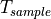 is the time resolution of the trace (1 ms), and is the number of fading scenarios that are desired (i.e., combinations of different sets of channel taps and user speed values). We provide traces for 3 different scenarios one for each taps configuration defined in Annex B.2 of [TS36104]:
Pedestrian: with nodes’ speed of 3 kmph.
Vehicular: with nodes’ speed of 60 kmph.
Urban: with nodes’ speed of 3 kmph.
hence . All traces have s and 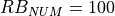. This results in a total 24 MB bytes of traces.
Being based on the SpectrumPhy, the LTE PHY model supports antenna
modeling via the ns-3 AntennaModel class. Hence, any model based on
this class can be associated with any eNB or UE instance. For
instance, the use of the CosineAntennaModel associated with an eNB
device allows to model one sector of a macro base station. By default,
the IsotropicAntennaModel is used for both eNBs and UEs.
The physical layer model provided in this LTE simulator is based on
the one described in [Piro2011], with the following modifications. The model now includes the
inter cell interference calculation and the simulation of uplink traffic, including both packet transmission and CQI generation.
Considering the granularity of the simulator based on RB, the control and the reference signaling have to be consequently modeled considering this constraint. According to the standard [TS36211], the downlink control frame starts at the beginning of each subframe and lasts up to three symbols across the whole system bandwidth, where the actual duration is provided by the Physical Control Format Indicator Channel (PCFICH). The information on the allocation are then mapped in the remaining resource up to the duration defined by the PCFICH, in the so called Physical Downlink Control Channel (PDCCH). A PDCCH transports a single message called Downlink Control Information (DCI) coming from the MAC layer, where the scheduler indicates the resource allocation for a specific user.
The PCFICH and PDCCH are modeled with the transmission of the control frame of a fixed duration of 3/14 of milliseconds spanning in the whole available bandwidth, since the scheduler does not estimate the size of the control region. This implies that a single transmission block models the entire control frame with a fixed power (i.e., the one used for the PDSCH) across all the available RBs. According to this feature, this transmission represents also a valuable support for the Reference Signal (RS). This allows of having every TTI an evaluation of the interference scenario since all the eNB are transmitting (simultaneously) the control frame over the respective available bandwidths. We note that, the model does not include the power boosting since it does not reflect any improvement in the implemented model of the channel estimation.
The Sounding Reference Signal (SRS) is modeled similar to the downlink control frame. The SRS is periodically placed in the last symbol of the subframe in the whole system bandwidth. The RRC module already includes an algorithm for dynamically assigning the periodicity as function of the actual number of UEs attached to a eNB according to the UE-specific procedure (see Section 8.2 of [TS36213]).
To model the latency of real MAC and PHY implementations, the PHY model simulates a MAC-to-channel delay in multiples of TTIs (1ms). The transmission of both data and control packets are delayed by this amount.
The generation of CQI feedback is done accordingly to what specified in [FFAPI]. In detail, we considered the generation
of periodic wideband CQI (i.e., a single value of channel state that is deemed representative of all RBs
in use) and inband CQIs (i.e., a set of value representing the channel state for each RB).
The CQI index to be reported is obtained by first obtaining a SINR measurement and then passing this SINR measurement to the Adaptive Modulation and Coding module which will map it to the CQI index.
In downlink, the SINR used to generate CQI feedback can be calculated in two different ways:
Ctrl method: SINR is calculated combining the signal power from the reference signals (which in the simulation is equivalent to the PDCCH) and the interference power from the PDCCH. This approach results in considering any neighboring eNB as an interferer, regardless of whether this eNB is actually performing any PDSCH transmission, and regardless of the power and RBs used for eventual interfering PDSCH transmissions.
Mixed method: SINR is calculated combining the signal power from the reference signals (which in the simulation is equivalent to the PDCCH) and the interference power from the PDSCH. This approach results in considering as interferers only those neighboring eNBs that are actively transmitting data on the PDSCH, and allows to generate inband CQIs that account for different amounts of interference on different RBs according to the actual interference level. In the case that no PDSCH transmission is performed by any eNB, this method consider that interference is zero, i.e., the SINR will be calculated as the ratio of signal to noise only.
To switch between this two CQI generation approaches, LteHelper::UsePdschForCqiGeneration needs to be configured: false for first approach and true for second approach (true is default value):
PUSCH based, calculated from the actual transmitted data.
The scheduler interface include an attribute system called UlCqiFilter for managing the filtering of the CQIs according to their nature, in detail:
SRS_UL_CQI for storing only SRS based CQIs.
PUSCH_UL_CQI for storing only PUSCH based CQIs.
It has to be noted that, the FfMacScheduler provides only the interface and it is matter of the actual scheduler implementation to include the code for managing these attributes (see scheduler related section for more information on this matter).
The PHY model is based on the well-known Gaussian interference models, according to which the powers of interfering signals (in linear units) are summed up together to determine the overall interference power.
The usage of the radio spectrum by eNBs and UEs in LTE is described in
[TS36101]. In the simulator, radio spectrum usage is modeled as follows.
Let denote the LTE Absolute Radio Frequency Channel Number, which
identifies the carrier frequency on a 100 kHz raster; furthermore, let be
the Transmission Bandwidth Configuration in number of Resource Blocks. For every
pair used in the simulation we define a corresponding SpectrumModel using
the functionality provided by the Spectrum Module .
model using the Spectrum framework described
in [Baldo2009]. and can be configured for every eNB instantiated
in the simulation; hence, each eNB can use a different spectrum model. Every UE
will automatically use the spectrum model of the eNB it is attached to. Using
the MultiModelSpectrumChannel described in [Baldo2009], the interference
among eNBs that use different spectrum models is properly accounted for.
This allows to simulate dynamic spectrum access policies, such as for
example the spectrum licensing policies that are
discussed in [Ofcom2600MHz].
The simulator includes an error model of the data plane (i.e., PDSCH and PUSCH) according to the standard link-to-system mapping (LSM) techniques. The choice is aligned with the standard system simulation methodology of OFDMA radio transmission technology. Thanks to LSM we are able to maintain a good level of accuracy and at the same time limiting the computational complexity increase. It is based on the mapping of single link layer performance obtained by means of link level simulators to system (in our case network) simulators. In particular link the layer simulator is used for generating the performance of a single link from a PHY layer perspective, usually in terms of code block error rate (BLER), under specific static conditions. LSM allows the usage of these parameters in more complex scenarios, typical of system/network simulators, where we have more links, interference and “colored” channel propagation phenomena (e.g., frequency selective fading).
To do this the Vienna LTE Simulator [ViennaLteSim] has been used for what concerns the extraction of link layer performance and the Mutual Information Based Effective SINR (MIESM) as LSM mapping function using part of the work recently published by the Signet Group of University of Padua [PaduaPEM].
The specific LSM method adopted is the one based on the usage of a mutual information metric, commonly referred to as the mutual information per per coded bit (MIB or MMIB when a mean of multiples MIBs is involved). Another option would be represented by the Exponential ESM (EESM); however, recent studies demonstrate that MIESM outperforms EESM in terms of accuracy [LozanoCost].
The mutual information (MI) is dependent on the constellation mapping and can be calculated per transport block (TB) basis, by evaluating the MI over the symbols and the subcarrier. However, this would be too complex for a network simulator. Hence, in our implementation a flat channel response within the RB has been considered; therefore the overall MI of a TB is calculated averaging the MI evaluated per each RB used in the TB. In detail, the implemented scheme is depicted in Figure MIESM computational procedure diagram, where we see that the model starts by evaluating the MI value for each RB, represented in the figure by the SINR samples. Then the equivalent MI is evaluated per TB basis by averaging the MI values. Finally, a further step has to be done since the link level simulator returns the performance of the link in terms of block error rate (BLER) in a addive white gaussian noise (AWGN) channel, where the blocks are the code blocks (CBs) independently encoded/decoded by the turbo encoder. On this matter the
standard 3GPP segmentation scheme has been used for estimating the actual CB size (described in section 5.1.2 of [TS36212]). This scheme divides the TB in blocks of size and 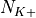 blocks of size . Therefore the overall TB BLER (TBLER) can be expressed as
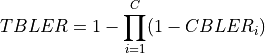
where the 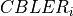 is the BLER of the CB obtained according to the link level simulator CB BLER curves.
For estimating the , the MI evaluation has been implemented according to its numerical approximation defined in [wimaxEmd]. Moreover, for reducing the complexity of the computation, the approximation has been converted into lookup tables. In detail, Gaussian cumulative model has been used for approximating the AWGN BLER curves with three parameters which provides a close fit to the standard AWGN performances, in formula:
where is the MI of the TB, represents the “transition center” and is related to the “transition width” of the Gaussian cumulative distribution for each Effective Code Rate (ECR) which is the actual transmission rate according to the channel coding and MCS. For limiting the computational complexity of the model we considered only a subset of the possible ECRs in fact we would have potentially 5076 possible ECRs (i.e., 27 MCSs and 188 CB sizes). On this respect, we will limit the CB sizes to some representative values (i.e., 40, 140, 160, 256, 512, 1024, 2048, 4032, 6144), while for the others the worst one approximating the real one will be used (i.e., the smaller CB size value available respect to the real one). This choice is aligned to the typical performance of turbo codes, where the CB size is not strongly impacting on the BLER. However, it is to be notes that for CB sizes lower than 1000 bits the effect might be relevant (i.e., till 2 dB); therefore, we adopt
this unbalanced sampling interval for having more precision where it is necessary. This behaviour is confirmed by the figures presented in the Annes Section.
On this respect, we reused part of the curves obtained within [PaduaPEM]. In detail, we introduced the CB size dependency to the CB BLER curves with the support of the developers of [PaduaPEM] and of the LTE Vienna Simulator. In fact, the module released provides the link layer performance only for what concerns the MCSs (i.e, with a given fixed ECR). In detail the new error rate curves for each has been evaluated with a simulation campaign with the link layer simulator for a single link with AWGN noise and for CB size of 104, 140, 256, 512, 1024, 2048, 4032 and 6144. These curves has been mapped with the Gaussian cumulative model formula presented above for obtaining the correspondents and parameters.
The BLER performance of all MCS obtained with the link level simulator are plotted in the following figures (blue lines) together with their correspondent mapping to the Gaussian cumulative distribution (red dashed lines).
20.1.5.7.3. Integration of the BLER curves in the ns-3 LTE module¶
The model implemented uses the curves for the LSM of the recently LTE PHY Error Model released in the ns3 community by the Signet Group [PaduaPEM] and the new ones generated for different CB sizes. The LteSpectrumPhy class is in charge of evaluating the TB BLER thanks to the methods provided by the LteMiErrorModel class, which is in charge of evaluating the TB BLER according to the vector of the perceived SINR per RB, the MCS and the size in order to proper model the segmentation of the TB in CBs. In order to obtain the vector of the perceived SINRs for data and control signals, two instances of LteChunkProcessor (dedicated to evaluate the SINR for obtaining physical error performance) have been attached to UE downlink and eNB uplink LteSpectrumPhy modules for evaluating the error model distribution of PDSCH (UE side) and ULSCH (eNB side).
The model can be disabled for working with a zero-losses channel by setting the DataErrorModelEnabled attribute of the LteSpectrumPhy class (by default is active). This can be done according to the standard ns3 attribute system procedure, that is:
The simulator includes the error model for downlink control channels (PCFICH and PDCCH), while in uplink it is assumed and ideal error-free channel. The model is based on the MIESM approach presented before for considering the effects of the frequency selective channel since most of the control channels span the whole available bandwidth.
The model adopted for the error distribution of these channels is based on an evaluation study carried out in the RAN4 of 3GPP, where different vendors investigated the demodulation performance of the PCFICH jointly with PDCCH. This is due to the fact that the PCFICH is the channel in charge of communicating to the UEs the actual dimension of the PDCCH (which spans between 1 and 3 symbols); therefore the correct decodification of the DCIs depends on the correct interpretation of both ones. In 3GPP this problem have been evaluated for improving the cell-edge performance [FujitsuWhitePaper], where the interference among neighboring cells can be relatively high due to signal degradation. A similar problem has been notices in femto-cell scenario and, more in general, in HetNet scenarios the bottleneck has been detected mainly as the PCFICH channel [Bharucha2011], where in case of many eNBs are deployed in the same service area, this channel may collide in frequency, making impossible the correct detection of
the PDCCH channel, too.
In the simulator, the SINR perceived during the reception has been estimated according to the MIESM model presented above in order to evaluate the error distribution of PCFICH and PDCCH. In detail, the SINR samples of all the RBs are included in the evaluation of the MI associated to the control frame and, according to this values, the effective SINR (eSINR) is obtained by inverting the MI evaluation process. It has to be noted that, in case of MIMO transmission, both PCFICH and the PDCCH use always the transmit diversity mode as defined by the standard. According to the eSINR perceived the decodification error probability can be estimated as function of the results presented in [R4-081920]. In case an error occur, the DCIs discarded and therefore the UE will be not able to receive the correspondent Tbs, therefore resulting lost.
The use of multiple antennas both at transmitter and receiver side, known as multiple-input and multiple-output (MIMO), is a problem well studied in literature during the past years. Most of the work concentrate on evaluating analytically the gain that the different MIMO schemes might have in term of capacity; however someones provide also information of the gain in terms of received power [CatreuxMIMO].
According to the considerations above, a model more flexible can be obtained considering the gain that MIMO schemes bring in the system from a statistical point of view. As highlighted before, [CatreuxMIMO] presents the statistical gain of several MIMO solutions respect to the SISO one in case of no correlation between the antennas. In the work the gain is presented as the cumulative distribution function (CDF) of the output SINR for what concern SISO, MIMO-Alamouti, MIMO-MMSE, MIMO-OSIC-MMSE and MIMO-ZF schemes. Elaborating the results, the output SINR distribution can be approximated with a log-normal one with different mean and variance as function of the scheme considered. However, the variances are not so different and they are approximately equal to the one of the SISO mode already included in the shadowing component of the BuildingsPropagationLossModel, in detail:
SISO: 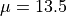 and [dB].
MIMO-Alamouti: 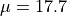 and [dB].
MIMO-MMSE: and [dB].
MIMO-OSIC-MMSE: and [dB].
MIMO-ZF: and [dB].
Therefore the PHY layer implements the MIMO model as the gain perceived by the receiver when using a MIMO scheme respect to the one obtained using SISO one. We note that, these gains referred to a case where there is no correlation between the antennas in MIMO scheme; therefore do not model degradation due to paths correlation.
According to [TS36214], the UE has to report a set of measurements of the eNBs that the device is able to perceive: the reference signal received power (RSRP) and the reference signal received quality (RSRQ). The former is a measure of the received power of a specific eNB, while the latter includes also channel interference and thermal noise.
The UE has to report the measurements jointly with the physical cell identity (PCI) of the cell. Both the RSRP and RSRQ measurements are performed during the reception of the RS, while the PCI is obtained with the Primary Synchronization Signal (PSS). The PSS is sent by the eNB each 5 subframes and in detail in the subframes 1 and 6. In real systems, only 504 distinct PCIs are available, and hence it could occur that two nearby eNBs use the same PCI; however, in the simulator we model PCIs using simulation metadata, and we allow up to 65535 distinct PCIs, thereby avoiding PCI collisions provided that less that 65535 eNBs are simulated in the same scenario.
According to [TS36133] sections 9.1.4 and 9.1.7, RSRP is reported by PHY layer in dBm while RSRQ in dB. The values of RSRP and RSRQ are provided to higher layers through the C-PHY SAP (by means of UeMeasurementsParameters struct) every 200 ms as defined in [TS36331]. Layer 1 filtering is performed by averaging the all the measurements collected during the last window slot. The periodicity of reporting can be adjusted for research purposes by means of the LteUePhy::UeMeasurementsFilterPeriod attribute.
The formulas of the RSRP and RSRQ can be simplified considering the assumption of the PHY layer that the channel is flat within the RB, the finest level of accuracy. In fact, this implies that all the REs within a RB have the same power, therefore:
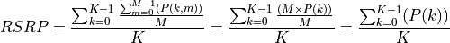
where 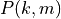 represents the signal power of the RE within the RB , which, as observed before, is constant within the same RB and equal to , is the number of REs carrying the RS in a RB and is the number of RBs. It is to be noted that , and in general all the powers defined in this section, is obtained in the simulator from the PSD of the RB (which is provided by the LteInterferencePowerChunkProcessor), in detail:
where is the power spectral density of the RB , is the bandwidth in Hz of the RB and is the number of REs per RB in an OFDM symbol.
Similarly, for RSSI we have
where is the number of OFDM symbols carrying RS in a RB and is the number of REs carrying a RS in a OFDM symbol (which is fixed to ) while , and represent respectively the perceived power of the serving cell, the interference power and the noise power of the RE in symbol . As for RSRP, the measurements within a RB are always equals among each others according to the PHY model; therefore , and , which implies that the RSSI can be calculated as:
Considering the constraints of the PHY reception chain implementation, and in order to maintain the level of computational complexity low, only RSRP can be directly obtained for all the cells. This is due to the fact that LteSpectrumPhy is designed for evaluating the interference only respect to the signal of the serving eNB. This implies that the PHY layer is optimized for managing the power signals information with the serving eNB as a reference. However, RSRP and RSRQ of neighbor cell can be extracted by the current information available of the serving cell as detailed in the following:
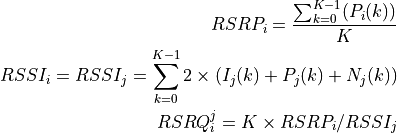
where is the RSRP of the neighbor cell , is the power perceived at any RE within the RB , is the total number of RBs, is the RSSI of the neighbor cell when the UE is attached to cell (which, since it is the sum of all the received powers, coincides with 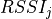), is the total interference perceived by UE in any RE of RB when attached to cell (obtained by the LteInterferencePowerChunkProcessor), 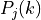 is the power perceived of cell in any RE of the RB and is the power noise spectral density in any RE. The sample is considered as valid in case of the RSRQ evaluated is above the LteUePhy::RsrqUeMeasThreshold attribute.
The HARQ scheme implemented is based on a incremental redundancy (IR) solutions combined with multiple stop-and-wait processes for enabling a continuous data flow. In detail, the solution adopted is the soft combining hybrid IR Full incremental redundancy (also called IR Type II), which implies that the retransmissions contain only new information respect to the previous ones. The resource allocation algorithm of the HARQ has been implemented within the respective scheduler classes (i.e., RrFfMacScheduler and PfFfMacScheduler, refer to their correspondent sections for more info), while the decodification part of the HARQ has been implemented in the LteSpectrumPhy and LteHarqPhy classes which will be detailed in this section.
According to the standard, the UL retransmissions are synchronous and therefore are allocated 7 ms after the original transmission. On the other hand, for the DL, they are asynchronous and therefore can be allocated in a more flexible way starting from 7 ms and it is a matter of the specific scheduler implementation. The HARQ processes behavior is depicted in Figure:ref:fig-harq-processes-scheme.
At the MAC layer, the HARQ entity residing in the scheduler is in charge of controlling the 8 HARQ processes for generating new packets and managing the retransmissions both for the DL and the UL. The scheduler collects the HARQ feedback from eNB and UE PHY layers (respectively for UL and DL connection) by means of the FF API primitives SchedUlTriggerReq and SchedUlTriggerReq. According to the HARQ feedback and the RLC buffers status, the scheduler generates a set of DCIs including both retransmissions of HARQ blocks received erroneous and new transmissions, in general, giving priority to the former. On this matter, the scheduler has to take into consideration one constraint when allocating the resource for HARQ retransmissions, it must use the same modulation order of the first transmission attempt (i.e., QPSK for MCS , 16QAM for MCS and 64QAM for MCS ). This restriction comes from the specification of the rate matcher in the 3GPP standard [
TS36212]_, where the algorithm fixes the modulation order for generating the different blocks of the redundancy versions.
The PHY Error Model model (i.e., the LteMiErrorModel class already presented before) has been extended for considering IR HARQ according to [wimaxEmd], where the parameters for the AWGN curves mapping for MIESM mapping in case of retransmissions are given by:
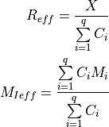
where is the number of original information bits, are number of coded bits, are the mutual information per HARQ block received on the total number of retransmissions. Therefore, in order to be able to return the error probability with the error model implemented in the simulator evaluates the and the 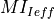 and return the value of error probability of the ECR of the same modulation with closest lower rate respect to the . In order to consider the effect of HARQ retransmissions a new sets of curves have been integrated respect to the standard one used for the original MCS. The new curves are intended for covering the cases when the most conservative MCS of a modulation is used which implies the generation of lower respect to the one of standard MCSs. On this matter the curves for 1, 2 and 3 retransmissions have been evaluated for 10 and 17. For MCS 0 we considered only the first retransmission since the
produced code rate is already very conservative (i.e., 0.04) and returns an error rate enough robust for the reception (i.e., the downturn of the BLER is centered around -18 dB).
It is to be noted that, the size of first TB transmission has been assumed as containing all the information bits to be coded; therefore is equal to the size of the first TB sent of a an HARQ process. The model assumes that the eventual presence of parity bits in the codewords is already considered in the link level curves. This implies that as soon as the minimum is reached the model is not including the gain due to the transmission of further parity bits.
The part of HARQ devoted to manage the decodification of the HARQ blocks has been implemented in the LteHarqPhy and LteSpectrumPhy classes. The former is in charge of maintaining the HARQ information for each active process . The latter interacts with LteMiErrorModel class for evaluating the correctness of the blocks received and includes the messaging algorithm in charge of communicating to the HARQ entity in the scheduler the result of the decodifications. These messages are encapsulated in the dlInfoListElement for DL and ulInfoListElement for UL and sent through the PUCCH and the PHICH respectively with an ideal error free model according to the assumptions in their implementation. A sketch of the iteration between HARQ and LTE protocol stack in represented in Figure:ref:fig-harq-architecture.
Finally, the HARQ engine is always active both at MAC and PHY layer; however, in case of the scheduler does not support HARQ the system will continue to work with the HARQ functions inhibited (i.e., buffers are filled but not used). This implementation characteristic gives backward compatibility with schedulers implemented before HARQ integration.
We now briefly describe how resource allocation is handled in LTE,
clarifying how it is modeled in the simulator. The scheduler is in
charge of generating specific structures called Data Control Indication (DCI)
which are then transmitted by the PHY of the eNB to the connected UEs, in order
to inform them of the resource allocation on a per subframe basis. In doing this
in the downlink direction, the scheduler has to fill some specific fields of the
DCI structure with all the information, such as: the Modulation and Coding
Scheme (MCS) to be used, the MAC Transport Block (TB) size, and the allocation
bitmap which identifies which RBs will contain the data
transmitted by the eNB to each user.
For the mapping of resources to
physical RBs, we adopt a localized mapping approach
(see [Sesia2009], Section 9.2.2.1);
hence in a given subframe each RB is always allocated to the same user in both
slots.
The allocation bitmap can be coded in
different formats; in this implementation, we considered the Allocation
Type 0 defined in [TS36213], according to which the RBs are grouped in
Resource Block Groups (RBG) of different size determined as a function of the
Transmission Bandwidth Configuration in use.
For certain bandwidth
values not all the RBs are usable, since the
group size is not a common divisor of the group. This is for instance the case
when the bandwidth is equal to 25 RBs, which results in a RBG size of 2 RBs, and
therefore 1 RB will result not addressable.
In uplink the format of the DCIs is different, since only adjacent RBs
can be used because of the SC-FDMA modulation. As a consequence, all
RBs can be allocated by the eNB regardless of the bandwidth
configuration.
The simulator provides two Adaptive Modulation and Coding (AMC) models: one based on the GSoC model [Piro2011] and one based on the physical error model (described in the following sections).
The former model is a modified version of the model described in [Piro2011],
which in turn is inspired from [Seo2004]. Our version is described in the
following. Let denote the
generic user, and let be its SINR. We get the spectral efficiency
of user using the following equations:
The procedure described in [R1-081483] is used to get
the corresponding MCS scheme. The spectral efficiency is quantized based on the
channel quality indicator (CQI), rounding to the lowest value, and is mapped to the corresponding MCS
scheme.
Finally, we note that there are some discrepancies between the MCS index
in [R1-081483]
and that indicated by the standard: [TS36213] Table
7.1.7.1-1 says that the MCS index goes from 0 to 31, and 0 appears to be a valid
MCS scheme (TB size is not 0) but in [R1-081483] the first useful MCS
index
is 1. Hence to get the value as intended by the standard we need to subtract 1
from the index reported in [R1-081483].
The alternative model is based on the physical error model developed for this simulator and explained in the following subsections. This scheme is able to adapt the MCS selection to the actual PHY layer performance according to the specific CQI report. According to their definition, a CQI index is assigned when a single PDSCH TB with the modulation coding scheme and code rate correspondent to that CQI index in table 7.2.3-1 of [TS36213] can be received with an error probability less than 0.1. In case of wideband CQIs, the reference TB includes all the RBGs available in order to have a reference based on the whole available resources; while, for subband CQIs, the reference TB is sized as the RBGs.
The model of the MAC Transport Blocks (TBs) provided by the simulator
is simplified with respect to the 3GPP specifications. In particular,
a simulator-specific class (PacketBurst) is used to aggregate
MAC SDUs in order to achieve the simulator’s equivalent of a TB,
without the corresponding implementation complexity.
The multiplexing of different logical channels to and from the RLC
layer is performed using a dedicated packet tag (LteRadioBearerTag), which
performs a functionality which is partially equivalent to that of the
MAC headers specified by 3GPP.
This section describes the ns-3 specific version of the LTE MAC
Scheduler Interface Specification published by the FemtoForum [FFAPI].
We implemented the ns-3 specific version of the FemtoForum MAC Scheduler
Interface [FFAPI] as a set of C++ abstract
classes; in particular, each primitive is translated to a C++ method of a
given class. The term implemented here is used with the same
meaning adopted in [FFAPI], and hence refers to the process of translating
the logical interface specification to a particular programming language.
The primitives in [FFAPI] are grouped in two groups: the CSCHED
primitives, which deal with scheduler configuration, and the SCHED primitives,
which deal with the execution of the scheduler. Furthermore, [FFAPI]
defines primitives of two different kinds: those of type REQ go from the MAC to
the Scheduler, and those of type IND/CNF go from the scheduler to the MAC. To
translate these characteristics into C++, we define the following abstract
classes that implement Service Access Points (SAPs) to be used to issue the
primitives:
the FfMacSchedSapProvider class defines all the C++ methods that
correspond to SCHED primitives of type REQ;
the FfMacSchedSapUser class defines all the C++ methods that
correspond to SCHED primitives of type CNF/IND;
the FfMacCschedSapProvider class defines all the C++ methods that
correspond to CSCHED primitives of type REQ;
the FfMacCschedSapUser class defines all the C++ methods that
correspond to CSCHED primitives of type CNF/IND;
There are 3 blocks involved in the MAC Scheduler interface: Control block,
Subframe block and Scheduler block. Each of these blocks provide one part of the
MAC Scheduler interface. The figure below shows the relationship
between the blocks and the SAPs defined in our implementation of the MAC
Scheduler Interface.
In addition to the above principles, the following design choices have been
taken:
The definition of the MAC Scheduler interface classes follows the naming
conventions of the ns-3 Coding Style. In particular, we follow the
CamelCase convention for the primitive names. For example, the primitive
CSCHED_CELL_CONFIG_REQ is translated to CschedCellConfigReq
in the ns-3 code.
The same naming conventions are followed for the primitive parameters. As
the primitive parameters are member variables of classes, they are also prefixed
with a m_.
regarding the use of vectors and lists in data structures, we note
that [FFAPI] is a pretty much C-oriented API. However, considered that
C++ is used in ns-3, and that the use of C arrays is discouraged, we used STL
vectors (std::vector) for the implementation of the MAC Scheduler
Interface, instead of using C arrays as implicitly suggested by the
way [FFAPI] is written.
In C++, members with constructors and destructors are not allow in
unions. Hence all those data structures that are said to be
unions in [FFAPI] have been defined as structs in our code.
The figure below shows how the MAC Scheduler Interface is
used within the eNB.
The User side of both the CSCHED SAP and the SCHED SAP are
implemented within the eNB MAC, i.e., in the file lte-enb-mac.cc.
The eNB MAC can be used with different scheduler implementations without
modifications. The same figure also shows, as an example, how the Round Robin
Scheduler is implemented: to interact with the MAC of the eNB, the Round Robin
scheduler implements the Provider side of the SCHED SAP and CSCHED
SAP interfaces. A similar approach can be used to implement other schedulers as
well. A description of each of the scheduler implementations that we provide as
part of our LTE simulation module is provided in the following subsections.
The Round Robin (RR) scheduler is probably the simplest scheduler found in the literature. It works by dividing the
available resources among the active flows, i.e., those logical channels which have a non-empty RLC queue. If the number of RBGs is greater than the number of active flows, all the flows can be allocated in the same subframe. Otherwise, if the number of active flows is greater than the number of RBGs, not all the flows can be scheduled in a given subframe; then, in the next subframe the allocation will start from the last flow that was not allocated. The MCS to be adopted for each user is done according to the received wideband CQIs.
For what concern the HARQ, RR implements the non adaptive version, which implies that in allocating the retransmission attempts RR uses the same allocation configuration of the original block, which means maintaining the same RBGs and MCS. UEs that are allocated for HARQ retransmissions are not considered for the transmission of new data in case they have a transmission opportunity available in the same TTI. Finally, HARQ can be disabled with ns3 attribute system for maintaining backward compatibility with old test cases and code, in detail:
The Proportional Fair (PF) scheduler [Sesia2009] works by scheduling a user
when its
instantaneous channel quality is high relative to its own average channel
condition over time. Let denote generic users; let be the
subframe index, and be the resource block index; let be MCS
usable by user on resource block according to what reported by the AMC
model (see Adaptive Modulation and Coding); finally, let be the TB
size in bits as defined in [TS36213] for the case where a number of
resource blocks is used. The achievable rate in bit/s for user
on resource block group at subframe is defined as
where is the TTI duration.
At the start of each subframe , each RBG is assigned to a certain user.
In detail, the index to which RBG is assigned at time
is determined as
where is the past throughput performance perceived by the
user .
According to the above scheduling algorithm, a user can be allocated to
different RBGs, which can be either adjacent or not, depending on the current
condition of the channel and the past throughput performance . The
latter is determined at the end of the subframe using the following
exponential moving average approach:
where is the time constant (in number of subframes) of
the exponential moving average, and is the actual
throughput achieved by the user in the subframe .
is measured according to the following procedure. First we
determine the MCS actually used by user
:
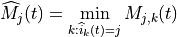
then we determine the total number of RBGs allocated to user
:
where indicates the cardinality of the set; finally,
For what concern the HARQ, PF implements the non adaptive version, which implies that in allocating the retransmission attempts the scheduler uses the same allocation configuration of the original block, which means maintaining the same RBGs and MCS. UEs that are allocated for HARQ retransmissions are not considered for the transmission of new data in case they have a transmission opportunity available in the same TTI. Finally, HARQ can be disabled with ns3 attribute system for maintaining backward compatibility with old test cases and code, in detail:
The Maximum Throughput (MT) scheduler [FCapo2012] aims to maximize the overall throughput of eNB.
It allocates each RB to the user that can achieve the maximum achievable rate in the current TTI.
Currently, MT scheduler in NS-3 has two versions: frequency domain (FDMT) and time domain (TDMT).
In FDMT, every TTI, MAC scheduler allocates RBGs to the UE who has highest achievable rate calculated
by subband CQI. In TDMT, every TTI, MAC scheduler selects one UE which has highest achievable rate
calculated by wideband CQI. Then MAC scheduler allocates all RBGs to this UE in current TTI.
The calculation of achievable rate in FDMT and TDMT is as same as the one in PF.
Let denote generic users; let be the
subframe index, and be the resource block index; let be MCS
usable by user on resource block according to what reported by the AMC
model (see Adaptive Modulation and Coding); finally, let be the TB
size in bits as defined in [TS36213] for the case where a number of
resource blocks is used. The achievable rate in bit/s for user
on resource block at subframe is defined as
where is the TTI duration.
At the start of each subframe , each RB is assigned to a certain user.
In detail, the index to which RB is assigned at time
is determined as
When there are several UEs having the same achievable rate, current implementation always selects
the first UE created in script. Although MT can maximize cell throughput, it cannot provide
fairness to UEs in poor channel condition.
20.1.7.4.4. Throughput to Average (TTA) Scheduler¶
The Throughput to Average (TTA) scheduler [FCapo2012] can be considered as an intermediate between MT and PF.
The metric used in TTA is calculated as follows:
Here, in bit/s represents the achievable rate for user
on resource block at subframe . The
calculation method already is shown in MT and PF. Meanwhile, in bit/s stands
for the achievable rate for at subframe . The difference between those two
achievable rates is how to get MCS. For , MCS is calculated by subband CQI while
is calculated by wideband CQI. TTA scheduler can only be implemented in frequency domain (FD) because
the achievable rate of particular RBG is only related to FD scheduling.
The Blind Average Throughput scheduler [FCapo2012] aims to provide equal throughput to all UEs under eNB. The metric
used in TTA is calculated as follows:
where is the past throughput performance perceived by the user and can be calculated by the
same method in PF scheduler. In the time domain blind average throughput (TD-BET), the scheduler selects the UE
with largest priority metric and allocates all RBGs to this UE. On the other hand, in the frequency domain blind
average throughput (FD-BET), every TTI, the scheduler first selects one UE with lowest pastAverageThroughput (largest
priority metric). Then scheduler assigns one RBG to this UE, it calculates expected throughput of this UE and uses it
to compare with past average throughput of other UEs. The scheduler continues
to allocate RBG to this UE until its expected throughput is not the smallest one among past average throughput
of all UE. Then the scheduler will use the same way to allocate RBG for a new UE which has the
lowest past average throughput until all RBGs are allocated to UEs. The principle behind this is
that, in every TTI, the scheduler tries the best to achieve the equal throughput among all UEs.
Token Bank Fair Queue (TBFQ) is a QoS aware scheduler which derives from the leaky-bucket mechanism. In TBFQ,
a traffic flow of user is characterized by following parameters:
: packet arrival rate (byte/sec )
: token generation rate (byte/sec)
: token pool size (byte)
: counter that records the number of token borrowed from or given to the token bank by flow ;
can be smaller than zero
Each K bytes data consumes k tokens. Also, TBFQ maintains a shared token bank () so as to balance the traffic
between different flows. If token generation rate is bigger than packet arrival rate , then tokens
overflowing from token pool are added to the token bank, and is increased by the same amount. Otherwise,
flow needs to withdraw tokens from token bank based on a priority metric 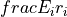, and is decreased.
Obviously, the user contributes more on token bank has higher priority to borrow tokens; on the other hand, the
user borrows more tokens from bank has lower priority to continue to withdraw tokens. Therefore, in case of several
users having the same token generation rate, traffic rate and token pool size, user suffers from higher interference
has more opportunity to borrow tokens from bank. In addition, TBFQ can police the traffic by setting the token
generation rate to limit the throughput. Additionally, TBFQ also maintains following three parameters for each flow:
Debt limit : if belows this threshold, user i cannot further borrow tokens from bank. This is for
preventing malicious UE to borrow too much tokens.
Credit limit : the maximum number of tokens UE i can borrow from the bank in one time.
Credit threshold : once reaches debt limit, UE i must store tokens to bank in order to further
borrow token from bank.
LTE in NS-3 has two versions of TBFQ scheduler: frequency domain TBFQ (FD-TBFQ) and time domain TBFQ (TD-TBFQ).
In FD-TBFQ, the scheduler always select UE with highest metric and allocates RBG with highest subband CQI until
there are no packets within UE’s RLC buffer or all RBGs are allocated [FABokhari2009]. In TD-TBFQ, after selecting
UE with maximum metric, it allocates all RBGs to this UE by using wideband CQI [WKWong2004].
Priority set scheduler (PSS) is a QoS aware scheduler which combines time domain (TD) and frequency domain (FD)
packet scheduling operations into one scheduler [GMonghal2008]. It controls the fairness among UEs by a specified
Target Bit Rate (TBR).
In TD scheduler part, PSS first selects UEs with non-empty RLC buffer and then divide them into two sets based
on the TBR:
set 1: UE whose past average throughput is smaller than TBR; TD scheduler calculates their priority metric in
Blind Equal Throughput (BET) style:
set 2: UE whose past average throughput is larger (or equal) than TBR; TD scheduler calculates their priority
metric in Proportional Fair (PF) style:
UEs belonged to set 1 have higher priority than ones in set 2. Then PSS will select UEs with
highest metric in two sets and forward those UE to FD scheduler. In PSS, FD scheduler allocates RBG k to UE n
that maximums the chosen metric. Two PF schedulers are used in PF scheduler:
Proportional Fair scheduled (PFsch)
Carrier over Interference to Average (CoIta)
where is similar past throughput performance perceived by the user , with the
difference that it is updated only when the i-th user is actually served. is an
estimation of the SINR on the RBG of UE . Both PFsch and CoIta is for decoupling
FD metric from TD scheduler. In addition, PSS FD scheduler also provide a weight metric W[n] for helping
controlling fairness in case of low number of UEs.
where is the past throughput performance perceived by the user . Therefore, on
RBG k, the FD scheduler selects the UE that maximizes the product of the frequency domain
metric (, ) by weight . This strategy will guarantee the throughput of lower
quality UE tend towards the TBR.
The Channel and QoS Aware (CQA) Scheduler [Bbojovic2014] is an LTE
MAC downlink scheduling algorithm that considers the head of line
(HOL) delay, the GBR parameters and channel quality over
different subbands. The CQA scheduler is based on joint TD and FD
scheduling.
In the TD (at each TTI) the CQA scheduler groups users by
priority. The purpose of grouping is to enforce the FD scheduling to
consider first the flows with highest HOL delay. The grouping metric
for user 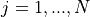 is defined in the
following way:
where 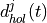 is the current value of HOL delay of flow
, and is a grouping parameter that determines
granularity of the groups, i.e. the number of the flows that will be
considered in the FD scheduling iteration.
The groups of flows selected in the TD iteration are forwarded to the FD
scheduling starting from the flows with the highest value of the
metric until all RBGs are assigned in the corresponding
TTI. In the FD, for each RBG , the CQA scheduler
assigns the current RBG to the user that has the maximum value of
the FD metric which we define in the following way:
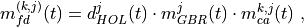
where 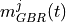 is calculated as follows:
where is the bit rate specified in EPS bearer of the
flow , is the past averaged throughput that is calculated with a
moving average, is the throughput achieved at the
time t, and is a coefficient such that .
For we consider two different
metrics: and .
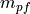 is the Proportional Fair metric which is defined as follows:
where 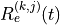 is the estimated achievable throughput of user
over RBG calculated by the Adaptive Modulation and Coding
(AMC) scheme that maps the channel quality indicator (CQI) value to
the transport block size in bits.
The other channel awareness metric that we consider is which
is proposed in [GMonghal2008] and it represents the frequency
selective fading gains over RBG for user and is calculated in
the following way:
where is the last reported CQI value from user
for the -th RBG.
The user can select whether or is used
by setting the attribute ns3::CqaFfMacScheduler::CqaMetric
respectively to "CqaPf" or "CqaFf".
The LTE model includes a model of the Random Access procedure based on
some simplifying assumptions, which are detailed in the following for
each of the messages and signals described in the specs [TS36321].
Random Access (RA) preamble: in real LTE systems this
corresponds to a Zadoff-Chu (ZC)
sequence using one of several formats available and sent in the
PRACH slots which could in principle overlap with PUSCH.
PRACH Configuration Index 14 is assumed, i.e., preambles can be
sent on any system frame number and subframe number.
The RA preamble is modeled using the LteControlMessage class,
i.e., as an ideal message that does not consume any radio
resources. The collision of preamble transmission by multiple UEs
in the same cell are modeled using a protocol interference model,
i.e., whenever two or more identical preambles are transmitted in
same cell at the same TTI, no one of these identical preambles
will be received by the eNB. Other than this collision model, no
error model is associated with the reception of a RA preamble.
Random Access Response (RAR): in real LTE systems, this is a
special MAC PDU sent on the DL-SCH. Since MAC control elements are not
accurately modeled in the simulator (only RLC and above PDUs
are), the RAR is modeled as an LteControlMessage that does not
consume any radio resources. Still, during the RA procedure, the
LteEnbMac will request to the scheduler the allocation of
resources for the RAR using the FF MAC Scheduler primitive
SCHED_DL_RACH_INFO_REQ. Hence, an enhanced scheduler
implementation (not available at the moment) could allocate radio
resources for the RAR, thus modeling the consumption of Radio
Resources for the transmission of the RAR.
Message 3: in real LTE systems, this is an RLC TM
SDU sent over resources specified in the UL Grant in the RAR. In
the simulator, this is modeled as a real RLC TM RLC PDU
whose UL resources are allocated by the scheduler upon call to
SCHED_DL_RACH_INFO_REQ.
Contention Resolution (CR): in real LTE system, the CR phase
is needed to address the case where two or more UE sent the same
RA preamble in the same TTI, and the eNB was able to detect this
preamble in spite of the collision. Since this event does not
occur due to the protocol interference model used for the
reception of RA preambles, the CR phase is not modeled in the
simulator, i.e., the CR MAC CE is never sent by the eNB and the
UEs consider the RA to be successful upon reception of the
RAR. As a consequence, the radio resources consumed for the
transmission of the CR MAC CE are not modeled.
The RLC entity is specified in the 3GPP technical specification
[TS36322], and comprises three different types of RLC: Transparent
Mode (TM), Unacknowledged Mode (UM) and Acknowledged Mode (AM). The
simulator includes one model for each of these entities
The RLC entities provide the RLC service interface to the upper PDCP layer and the MAC service interface
to the lower MAC layer. The RLC entities use the PDCP service interface from the upper PDCP layer and
the MAC service interface from the lower MAC layer.
The processing of the data transfer in the Acknowledge Mode (AM) RLC entity is explained in section 5.1.3 of [TS36322].
In this section we describe some details of the implementation of the
RLC entity.
Our implementation of the AM RLC entity maintains 3 buffers for the
transmit operations:
Transmission Buffer: it is the RLC SDU queue.
When the AM RLC entity receives a SDU in the TransmitPdcpPdu service primitive from the
upper PDCP entity, it enqueues it in the Transmission Buffer. We
put a limit on the RLC buffer size and the LteRlc TxDrop trace source
is called when a drop due to a full buffer occurs.
Transmitted PDUs Buffer: it is the queue of transmitted RLC PDUs for which an ACK/NACK has not
been received yet. When the AM RLC entity sends a PDU to the MAC
entity, it also puts a copy of the transmitted PDU in the Transmitted PDUs Buffer.
Retransmission Buffer: it is the queue of RLC PDUs which are considered for retransmission
(i.e., they have been NACKed). The AM RLC entity moves this PDU to the Retransmission Buffer,
when it retransmits a PDU from the Transmitted Buffer.
The following sequence diagram shows the interactions between the
different entities (RRC, PDCP, AM RLC, MAC and MAC scheduler) of the
eNB in the downlink to perform data communications.
Sequence diagram of data PDU transmission in downlink¶
The PDCP entity calls the Transmit_PDCP_PDUserviceprimitive in
order to send a data PDU. The AM RLC entity processes this service
primitive according to the AM data transfer procedures defined in
section 5.1.3 of [TS36322].
When the Transmit_PDCP_PDU service primitive is called, the AM RLC
entity performs the following operations:
Put the data SDU in the Transmission Buffer.
Compute the size of the buffers (how the size of buffers is
computed will be explained afterwards).
Call the Report_Buffer_Status service primitive of the eNB
MAC entity in order to notify to the eNB MAC
entity the sizes of the buffers of the AM RLC entity. Then, the
eNB MAC entity updates the buffer status in the MAC scheduler
using the SchedDlRlcBufferReq service primitive of the FF MAC
Scheduler API.
Afterwards, when the MAC scheduler decides that some data can be sent,
the MAC entity notifies it to the RLC entity, i.e. it calls the
Notify_Tx_Opportunity service primitive, then the AM RLC entity
does the following:
Create a single data PDU by segmenting and/or concatenating the
SDUs in the Transmission Buffer.
Move the data PDU from the Transmission Buffer to the
Transmitted PDUs Buffer.
Update state variables according section 5.1.3.1.1 of
[TS36322].
Call the Transmit_PDU primitive in order to send the data
PDU to the MAC entity.
The sequence diagram of Figure Sequence diagram of data PDU retransmission in downlink shows
the interactions between the different entities (AM RLC, MAC and MAC
scheduler) of the eNB in downlink when data PDUs must be retransmitted
by the AM RLC entity.
Sequence diagram of data PDU retransmission in downlink¶
The transmitting AM RLC entity can receive STATUS PDUs from the peer AM RLC entity. STATUS PDUs are
sent according section 5.3.2 of [TS36322] and the processing of reception is made according
section 5.2.1 of [TS36322].
When a data PDUs is retransmitted from the Transmitted PDUs Buffer, it is also moved to the
Retransmission Buffer.
The sequence diagram of Figure Sequence diagram of data PDU transmission in uplink shows
the interactions between the different entities of the UE (RRC, PDCP,
RLC and MAC) and the eNB (MAC and Scheduler) in uplink when data PDUs
are sent by the upper layers.
Sequence diagram of data PDU transmission in uplink¶
It is similar to the sequence diagram in downlink; the main difference
is that in this case the Report_Buffer_Status is sent from the UE MAC
to the MAC Scheduler in the eNB over the air using the control
channel.
The sequence diagram of Figure Sequence diagram of data PDU retransmission in uplink shows
the interactions between the different entities of the UE (AM RLC and
MAC) and the eNB (MAC) in uplink when data PDUs must be retransmitted
by the AM RLC entity.
Sequence diagram of data PDU retransmission in uplink¶
The Transmission Buffer contains RLC SDUs. A RLC PDU is one or more SDU segments plus an RLC header.
The size of the RLC header of one RLC PDU depends on the number of SDU segments the PDU contains.
The 3GPP standard (section 6.1.3.1 of [TS36321]) says clearly that,
for the uplink, the RLC and MAC headers are not considered in the
buffer size that is to be report as part of the Buffer Status Report.
For the downlink, the behavior is not specified. Neither [FFAPI] specifies
how to do it. Our RLC model works by assuming that the calculation of
the buffer size in the downlink is done exactly as in the uplink,
i.e., not considering the RLC and MAC header size.
We note that this choice affects the interoperation with the
MAC scheduler, since, in response to the
Notify_Tx_Opportunity service primitive, the RLC is expected to
create a PDU of no more than the size requested by the MAC, including
RLC overhead. Hence, unneeded fragmentation can occur if (for example)
the MAC notifies a transmission exactly equal to the buffer size
previously reported by the RLC. We assume that it is left to the Scheduler
to implement smart strategies for the selection of the size of the
transmission opportunity, in order to eventually avoid the inefficiency
of unneeded fragmentation.
The AM RLC entity generates and sends exactly one RLC PDU for each transmission opportunity even
if it is smaller than the size reported by the transmission opportunity. So for instance, if a
STATUS PDU is to be sent, then only this PDU will be sent in that transmission opportunity.
The segmentation and concatenation for the SDU queue of the AM RLC entity follows the same philosophy
as the same procedures of the UM RLC entity but there are new state
variables (see [TS36322] section 7.1) only present in the AM RLC entity.
It is noted that, according to the 3GPP specs, there is no concatenation for the Retransmission Buffer.
The current model of the AM RLC entity does not support the
re-segmentation of the retransmission buffer. Rather, the AM RLC
entity just waits to receive a big enough transmission
opportunity.
The transmit operations of the UM RLC are similar to those of the AM
RLC previously described in Section Transmit operations in downlink,
with the difference that, following the specifications of [TS36322],
retransmission are not performed, and there are no STATUS PDUs.
The transmit operations in the uplink are similar to those of the
downlink, with the main difference that the Report_Buffer_Status is
sent from the UE MAC to the MAC Scheduler in the eNB over the air
using the control channel.
The calculation of the buffer size for the UM RLC is done using the
same approach of the AM RLC, please refer to section
Calculation of the buffer size for the corresponding description.
In the simulator, the TM RLC still provides to the upper layers the
same service interface provided by the AM and UM RLC
entities to the PDCP layer; in practice, this interface is used by an RRC
entity (not a PDCP entity) for the transmission of RLC SDUs. This
choice is motivated by the fact that the services provided by the TM
RLC to the upper layers, according to [TS36322], is a subset of those
provided by the UM and AM RLC entities to the PDCP layer; hence,
we reused the same interface for simplicity.
The transmit operations in the downlink are performed as follows. When
the Transmit_PDCP_PDUserviceprimitive is called by the upper
layers, the TM RLC does the following:
put the SDU in the Transmission Buffer
compute the size of the Transmission Buffer
call the Report_Buffer_Status service primitive of the eNB
MAC entity
Afterwards, when the MAC scheduler decides that some data can be sent
by the logical channel to which the TM RLC entity belongs, the MAC
entity notifies it to the TM RLC entity by calling the
Notify_Tx_Opportunity service primitive. Upon reception of this
primitive, the TM RLC entity does the following:
if the TX opportunity has a size that is greater than or equal to
the size of the head-of-line SDU in the Transmission Buffer
dequeue the head-of-line SDU from the Transmission Buffer
create one RLC PDU that contains entirely that SDU, without any
RLC header
Call the Transmit_PDU primitive in order to send the RLC
PDU to the MAC entity.
The transmit operations in the uplink are similar to those of the
downlink, with the main difference that a transmission opportunity can
also arise from the assignment of the UL GRANT as part of the Random
Access procedure, without an explicit Buffer Status Report issued by
the TM RLC entity.
As per the specifications [TS36322], the TM RLC does not add any RLC
header to the PDUs being transmitted. Because of this, the buffer size
reported to the MAC layer is calculated simply by summing the size of
all packets in the transmission buffer, thus notifying to the MAC the
exact buffer size.
In addition to the AM, UM and TM implementations that are modeled
after the 3GPP specifications, a simplified RLC model is provided,
which is called Saturation Mode (SM) RLC. This RLC model does not accept
PDUs from any above layer (such as PDCP); rather, the SM RLC takes care of the
generation of RLC PDUs in response to
the notification of transmission opportunities notified by the MAC.
In other words, the SM RLC simulates saturation conditions, i.e., it
assumes that the RLC buffer is always full and can generate a new PDU
whenever notified by the scheduler.
The SM RLC is used for simplified simulation scenarios in which only the
LTE Radio model is used, without the EPC and hence without any IP
networking support. We note that, although the SM RLC is an
unrealistic traffic model, it still allows for the correct simulation
of scenarios with multiple flows belonging to different (non real-time)
QoS classes, in order to test the QoS performance obtained by different
schedulers. This can be
done since it is the task of the Scheduler to assign transmission
resources based on the characteristics (e.g., Guaranteed Bit Rate) of
each Radio Bearer, which are specified upon the definition of each
Bearer within the simulation program.
As for schedulers designed to work with real-time QoS
traffic that has delay constraints, the SM RLC is probably not an appropriate choice.
This is because the absence of actual RLC SDUs (replaced by the artificial
generation of Buffer Status Reports) makes it not possible to provide
the Scheduler with meaningful head-of-line-delay information, which is
often the metric of choice for the implementation of scheduling
policies for real-time traffic flows. For the simulation and testing
of such schedulers, it is advisable to use either the UM or the AM RLC
models instead.
The reference document for the specification of the PDCP entity is
[TS36323]. With respect to this specification, the PDCP model
implemented in the simulator supports only the following features:
transfer of data (user plane or control plane);
maintenance of PDCP SNs;
transfer of SN status (for use upon handover);
The following features are currently not supported:
header compression and decompression of IP data flows using the ROHC protocol;
in-sequence delivery of upper layer PDUs at re-establishment of lower layers;
duplicate elimination of lower layer SDUs at re-establishment of lower layers for radio bearers mapped on RLC AM;
ciphering and deciphering of user plane data and control plane data;
integrity protection and integrity verification of control plane data;
The RRC model implemented in the simulator provides the following functionality:
generation (at the eNB) and interpretation (at the UE) of System
Information (in particular the Master Information Block and, at the
time of this writing, only System Information Block Type 1 and 2)
initial cell selection
RRC connection establishment procedure
RRC reconfiguration procedure, supporting the following use cases:
+ reconfiguration of the SRS configuration index
+ reconfiguration of the PHY TX mode (MIMO)
+ reconfiguration of UE measurements
+ data radio bearer setup
+ handover
RRC connection re-establishment, supporting the following use
cases:
+ handover
The RRC model is divided into the following components:
the RRC entities LteUeRrc and LteEnbRrc, which implement the state
machines of the RRC entities respectively at the UE and the eNB;
the RRC SAPs LteUeRrcSapProvider, LteUeRrcSapUser,
LteEnbRrcSapProvider, LteEnbRrcSapUser, which allow the RRC
entities to send and receive RRC messages and information
elmenents;
the RRC protocol classes LteUeRrcProtocolIdeal,
LteEnbRrcProtocolIdeal, LteUeRrcProtocolReal,
LteEnbRrcProtocolReal, which implement two different models for
the transmission of RRC messages.
All the states are transient, however, the UE in “CONNECTED_NORMALLY” state will
only switch to the IDLE state if the downlink SINR is below a defined threshold,
which would lead to radio link failure Radio Link Failure.
One the other hand, the UE would not be able switch to IDLE mode due to a handover
failure, as mentioned in X2.
The eNB RRC maintains the state for each UE that is attached to the
cell. From an implementation point of view, the state of each UE is
contained in an instance of the UeManager class. The state machine is
represented in Figure ENB RRC State Machine for each UE.
Initial cell selection is an IDLE mode procedure, performed by UE when it has
not yet camped or attached to an eNodeB. The objective of the procedure is to
find a suitable cell and attach to it to gain access to the cellular network.
It is typically done at the beginning of simulation, as depicted in Figure
Sample runs of initial cell selection in UE and timing of related events below. The time diagram on the left side
is illustrating the case where initial cell selection succeed on first try,
while the diagram on the right side is for the case where it fails on the first
try and succeed on the second try. The timing assumes the use of real RRC
protocol model (see RRC protocol models) and no transmission error.
Sample runs of initial cell selection in UE and timing of related events¶
The functionality is based on 3GPP IDLE mode specifications, such as in
[TS36300], [TS36304], and [TS36331]. However, a proper implementation of IDLE
mode is still missing in the simulator, so we reserve several simplifying
assumptions:
multiple carrier frequency is not supported;
multiple Public Land Mobile Network (PLMN) identities (i.e. multiple network
operators) is not supported;
RSRQ measurements are not utilized;
stored information cell selection is not supported;
“Any Cell Selection” state and camping to an acceptable cell is not
supported;
marking a cell as barred or reserved is not supported;
Idle cell reselection is not supported, hence it is not possible for UE to camp to
a different cell after the initial camp has been placed; and
UE’s Closed Subscriber Group (CSG) white list contains only one CSG identity.
Also note that initial cell selection is only available for EPC-enabled
simulations. LTE-only simulations must use the manual attachment method. See
section Network Attachment of the User Documentation for more
information on their differences in usage.
The next subsections cover different parts of initial cell selection, namely
cell search, broadcast of system information, and cell selection evaluation.
Cell search aims to detect surrounding cells and measure the strength of
received signal from each of these cells. One of these cells will become the
UE’s entry point to join the cellular network.
The measurements are based on the RSRP of the received PSS, averaged by Layer 1
filtering, and performed by the PHY layer, as previously described in more
detail in section UE PHY Measurements Model. PSS is transmitted by eNodeB
over the central 72 sub-carriers of the DL channel (Section 5.1.7.3 [TS36300]),
hence we model cell search to operate using a DL bandwidth of 6 RBs. Note that
measurements of RSRQ are not available at this point of time in simulation. As
a consequence, the LteUePhy::RsrqUeMeasThreshold attribute does not apply
during cell search.
By using the measured RSRP, the PHY entity is able to generate a list of
detected cells, each with its corresponding cell ID and averaged RSRP. This list
is periodically pushed via CPHY SAP to the RRC entity as a measurement report.
The RRC entity inspects the report and simply choose the cell with the strongest
RSRP, as also indicated in Section 5.2.3.1 of [TS36304]. Then it instructs back
the PHY entity to synchronize to this particular cell. The actual operating
bandwidth of the cell is still unknown at this time, so the PHY entity listens
only to the minimum bandwidth of 6 RBs. Nevertheless, the PHY entity will be
able to receive system broadcast message from this particular eNodeB, which is
the topic of the next subsection.
System information blocks are broadcasted by eNodeB to UEs at predefined time
intervals, adapted from Section 5.2.1.2 of [TS36331]. The supported system
information blocks are:
Master Information Block (MIB)
Contains parameters related to the PHY layer, generated during cell
configuration and broadcasted every 10 ms at the beginning of radio frame
as a control message.
System Information Block Type 1 (SIB1)
Contains information regarding network access, broadcasted every 20 ms at
the middle of radio frame as a control message. Not used in manual
attachment method. UE must have decoded MIB before it can receive SIB1.
System Information Block Type 2 (SIB2)
Contains UL- and RACH-related settings, scheduled to transmit via RRC
protocol at 16 ms after cell configuration, and then repeats every 80 ms
(configurable through LteEnbRrc::SystemInformationPeriodicity attribute.
UE must be camped to a cell in order to be able to receive its SIB2.
Reception of system information is fundamental for UE to advance in its
lifecycle. MIB enables the UE to increase the initial DL bandwidth of 6 RBs to
the actual operating bandwidth of the network. SIB1 provides information
necessary for cell selection evaluation (explained in the next section). And
finally SIB2 is required before the UE is allowed to switch to CONNECTED state.
UE RRC reviews the measurement report produced in Cell Search and the
cell access information provided by SIB1. Once both information is available for
a specific cell, the UE triggers the evaluation process. The purpose of this
process is to determine whether the cell is a suitable cell to camp to.
The evaluation process is a slightly simplified version of Section 5.2.3.2 of
[TS36304]. It consists of the following criteria:
Rx level criterion; and
closed subscriber group (CSG) criterion.
The first criterion, Rx level, is based on the cell’s measured RSRP
, which has to be higher than a required minimum
in order to pass the criterion:
where is determined by each eNodeB and is obtainable by UE
from SIB1.
The last criterion, CSG, is a combination of a true-or-false parameter called
CSG indication and a simple number CSG identity. The basic rule is that UE
shall not camp to eNodeB with a different CSG identity. But this rule is only
enforced when CSG indication is valued as true. More details are provided in
Section Network Attachment of the User Documentation.
When the cell passes all the above criteria, the cell is deemed as suitable.
Then UE camps to it (IDLE_CAMPED_NORMALLY state).
After this, upper layer may request UE to enter CONNECTED mode. Please refer to
section RRC connection establishment for details on this.
On the other hand, when the cell does not pass the CSG criterion, then the cell
is labeled as acceptable (Section 10.1.1.1 [TS36300]). In this case, the RRC
entity will tell the PHY entity to synchronize to the second strongest cell and
repeat the initial cell selection procedure using that cell. As long as no
suitable cell is found, the UE will repeat these steps while avoiding cells that
have been identified as acceptable.
Radio Admission Control is supported by having the eNB RRC
reply to an RRC CONNECTION REQUEST message sent by the UE with either
an RRC CONNECTION SETUP message or an RRC CONNECTION REJECT message,
depending on whether the new UE is to be admitted or not. In the
current implementation, the behavior is determined by the boolean attribute
ns3::LteEnbRrc::AdmitRrcConnectionRequest. There is currently no Radio Admission
Control algorithm that dynamically decides whether a new connection
shall be admitted or not.
In real LTE networks, Radio link failure (RLF) can happen due to several reasons.
It can be triggered if a UE is unable to decode PDCCH due to poor signal quality,
upon maximum RLC retransmissions, RACH problems and other reasons. 3GPP only
specifies guidelines to detect RLF at the UE side, in [TS36331] and [TS36133].
On the other hand, the eNB implementation is expected to be vendor specific.
To implement the RLF functionality in ns-3, we have assumed the following
simplifications:
The RLF detection procedure at eNodeB is not implemented. Instead, a direct
function call by using the SAP between UE and eNB RRC (for both ideal and real
RRC) is used to notify the eNB about the RLF.
No RRC connection re-establishment procedure is implemented, thus, the UE
directly goes to the IDLE state upon RLF. This is in fact as per the standard
[TS36331] sec 5.3.11.3, since, at this stage the LTE module does not support
the Access Stratum (AS) security.
The above mentioned RLF specifications can be divided into the following two
categories:
RLF detection
Actions upon RLF detection
In the following, we will explain the RLF implementation in context of these
two categories.
The RLF detection at the UE is implemented as per [TS36133], i.e., by monitoring
the radio link quality based on the reference signals (which in the simulation
is equivalent to the PDCCH) in the downlink. Thus, it is independent of the method
used for the downlink CQI computation, i.e., Ctrl method and Mixed method.
Moreover, when using FFR, especially for hard-FFR, and CQIs based on Mixed method,
UEs might experience relatively good performance and RLF simultaneously. This is
due to the fact that the interference in PDSCH is affected by the actual data
transmissions on the specific RBs and the power control. Therefore, UEs might
experience good SINR in PDSCH, while bad SINR in PDCCH channel. For more details
about these methods please refer to CQI feedback. Also, it does not
matter if the DL control error model is disabled, a UE can still detect the RLF
since the SINR based on the control channel is reported to the LteUePhy class,
using a callback hooked in LteHelper while installing a UE device.
The RLF detection starts once the RRC connection is established between UE and
eNodeB, i.e., UE is in “CONNECTED_NORMALLY” state; upon which the RLF parameters
are configured (see LteUePhy::DoConfigureRadioLinkFailureDetection). In real
networks, these parameters are transmitted by the eNB using IE UE-TimersAndConstants or
RLF-TimersAndConstants. However, for the sake of simplification, in the simulator
they are presented as the attributes of the LteUePhy and LteUeRrc classes.
Moreover, what concerns the carrier aggregation, i.e., when a UE is configured
with multiple component carriers, the RLF detection is only performed by the
primary component carrier, i.e. component carrier id 0
(see LteUePhy::DoNotifyConnectionSuccessful). In LteUePhy class, CQI
calculation is triggered for every downlink subframe received,
and the average SINR value is measured across all resource blocks. For the RLF
detection, these SINR values are averaged over a downlink frame and if the result
is less than a defined threshold Qout (default: -5dB), the frame cannot be decoded
(see``LteUePhy::RadioLinkFailureDetection``). The Qout threshold corresponds to 10%
block error rate (BLER) of a hypothetical PDCCH transmission taking into account
the PCFICH errors [R4-081920] (also refer to
Control Channels PHY Error Model). Once, the UE is unable to decode
20 consecutive frames, i.e., the Qout evaluation period (200ms) is reached, an
out-of-sync indication is sent to the UE RRC layer (see LteUeRrc::DoNotifyOutOfSync).
Else, the counter for the unsuccessfuly decoded frames is reset to zero. At the
LteUeRrc, when the number of consecutive out-of-sync indications matches with the
value of N310 parameter, the T310 timer is started and LteUePhy is notified to start
measuring for in-sync indications (see LteUePhy::DoStartInSyncDetection). We note
that, the UE RRC state is not changed till the expiration of T310 timer. If the
resultant SINR values averaged over a downlink frame is greater than a defined
threshold Qin (default: -3.8dB), the frame is considered to be successfully
decoded. Qin corresponds to 2% BLER [R4-081920] of a hypothetical PDCCH transmission
taking into account the PCFICH errors. Once the UE is able to decode 10
consecutive frames, an in-sync indication is sent to the UE RRC layer
(see LteUeRrc::DoNotifyInSync). Else, the counter for the successfully decoded
frames is reset to zero. If prior to the T310 timer expiry, the number of
consecutive in-sync indications matches with N311 parameter of LteUeRRC, the UE
is considered back in-sync. At this stage, the related parameters are reset to
initiate the radio link failure detection from the beginning
(see LteUePhy::DoConfigureRadioLinkFailureDetection). On the other hand, If the
T310 timer expires, the UE considers that a RLF has occurred
(see LteUeRrc::RadioLinkFailureDetected).
Once the T310 timer is expired, a UE is considered to be in RLF; upon which the
UE RRC:
Sends a request to the eNB RRC to remove the UE context
Moves to “CONNECTED_PHY_PROBLEM” state
Notifies the UE NAS layer about the release of RRC connection.
Then, after getting the notification from the UE RRC the NAS does the following:
Delete all the TFTs
Reset the bearer counter
Restore the bearer list, which is used to activate the bearers for the next
RRC connection. This restoration of the bearers is achieved by maintaining an
additional list, i.e., m_bearersToBeActivatedListForReconnection in EpcUeNas
class
Switch the NAS state to OFF by calling EpcUeNas::Disconnect
Tells the UE RRC to disconnect
The UE RRC, upon receiving the call to disconnect from the EpcUeNas class,
performs the action as specified by [TS36331] 5.3.11.3, and finally leaves the
connected state, i.e., its RRC state is changed from “CONNECTED_PHY_PROBLEM” to
“IDLE_START” to perform cell selection as shown in figures UE RRC State Machine
and UE procedures after radio link failure.
At this stage, the LTE module does not support the paging functionality, therefore,
to allow a UE to read SIB2 message after camping on a suitable cell after RLF, a
work around is used in LteUeRrc::EvaluateCellForSelection method. As per this
workaround, the UE RRC invokes the call to LteUeRrc::DoConnect method, which
enables the UE to switch its state from “IDLE_CAMPED_NORMALLY” to “IDLE_WAIT_SIB2”,
thus, allowing it to perform the random access.
The eNB RRC, after receiving the notification from the UE RRC starts the procedure
of UE context deletion, which also involves the deletion of the UE context removal
from the EPC UE context removal from EPC and the eNB stack
UE context removal from eNB stack. We note that, the UE context
at the MME is not removed since, bearers are only added at the start of a
simulation in MME, and cannot be added again unless scheduled for addition
during a simulation.
The UE RRC entity provides support for UE measurements; in particular, it
implements the procedures described in Section 5.5 of [TS36331], with the
following simplifying assumptions:
only E-UTRA intra-frequency measurements are supported, which implies:
only one measurement object is used during the simulation;
measurement gaps are not needed to perform the measurements;
Event B1 and B2 are not implemented;
only reportStrongestCells purpose is supported, while reportCGI and
reportStrongestCellsForSON purposes are not supported;
s-Measure is not supported;
carrier aggregation is now supported in the LTE module
- Event A6 is not implemented;
speed dependent scaling of time-to-trigger (Section 5.5.6.2 of [TS36331]) is
not supported.
The model is based on the concept of UE measurements consumer, which is an
entity that may request an eNodeB RRC entity to provide UE measurement reports.
Consumers are, for example, Handover algorithm, which compute
handover decision based on UE measurement reports. Test cases and user’s
programs may also become consumers. Figure Relationship between UE measurements and its consumers depicts
the relationship between these entities.
Relationship between UE measurements and its consumers¶
The whole UE measurements function at the RRC level is divided into 4 major
parts:
Measurement configuration (handled by LteUeRrc::ApplyMeasConfig)
Performing measurements (handled by LteUeRrc::DoReportUeMeasurements)
Measurement report triggering (handled by
LteUeRrc::MeasurementReportTriggering)
Measurement reporting (handled by LteUeRrc::SendMeasurementReport)
The following sections will describe each of the parts above.
An eNodeB RRC entity configures UE measurements by sending the configuration
parameters to the UE RRC entity. This set of parameters are defined within the
MeasConfig Information Element (IE) of the RRC Connection Reconfiguration
message (RRC connection reconfiguration).
The eNodeB RRC entity implements the configuration parameters and procedures
described in Section 5.5.2 of [TS36331], with the following simplifying
assumption:
configuration (i.e. addition, modification, and removal) can only be done
before the simulation begins;
all UEs attached to the eNodeB will be configured the same way, i.e. there is
no support for configuring specific measurement for specific UE; and
it is assumed that there is a one-to-one mapping between the PCI and the
E-UTRAN Global Cell Identifier (EGCI). This is consistent with the PCI
modeling assumptions described in UE PHY Measurements Model.
The eNodeB RRC instance here acts as an intermediary between the consumers and
the attached UEs. At the beginning of simulation, each consumer provides the
eNodeB RRC instance with the UE measurements configuration that it requires.
After that, the eNodeB RRC distributes the configuration to attached UEs.
Users may customize the measurement configuration using several methods. Please
refer to Section Configure UE measurements of the User Documentation
for the description of these methods.
UE RRC receives both RSRP and RSRQ measurements on periodical basis from UE PHY,
as described in UE PHY Measurements Model. Layer 3 filtering will be
applied to these received measurements. The implementation of the filtering
follows Section 5.5.3.2 of [TS36331]:
where:
is the latest received measurement result from the physical
layer;
is the updated filtered measurement result;
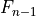 is the old filtered measurement result, where
(i.e. the first measurement is not filtered); and
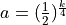, where is the configurable
filterCoefficient provided by the QuantityConfig;
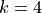 is the default value, but can be configured by setting the
RsrpFilterCoefficient and RsrqFilterCoefficient attributes in
LteEnbRrc.
Therefore will disable Layer 3 filtering. On the other hand, past
measurements can be granted more influence on the filtering results by using
larger value of .
In this part, UE RRC will go through the list of active measurement
configuration and check whether the triggering condition is fulfilled in
accordance with Section 5.5.4 of [TS36331]. When at least one triggering
condition from all the active measurement configuration is fulfilled, the
measurement reporting procedure (described in the next subsection) will be
initiated.
3GPP defines two kinds of triggerType: periodical and event-based. At the
moment, only event-based criterion is supported. There are various events that
can be selected, which are briefly described in the table below:
List of supported event-based triggering criteria¶
Name
Description
Event A1
Serving cell becomes better than threshold
Event A2
Serving cell becomes worse than threshold
Event A3
Neighbour becomes offset dB better than serving cell
Event A4
Neighbour becomes better than threshold
Event A5
Serving becomes worse than threshold1
AND neighbour becomes better than threshold2
Two main conditions to be checked in an event-based trigger are the entering
condition and the leaving condition. More details on these two can be found
in Section 5.5.4 of [TS36331].
An event-based trigger can be further configured by introducing hysteresis and
time-to-trigger. Hysteresis () defines the distance between the
entering and leaving conditions in dB. Similarly, time-to-trigger introduces
delay to both entering and leaving conditions, but as a unit of time.
The periodical type of reporting trigger is not supported, but its behavior
can be easily obtained by using an event-based trigger. This can be done by
configuring the measurement in such a way that the entering condition is always
fulfilled, for example, by setting the threshold of Event A1 to zero (the
minimum level). As a result, the measurement reports will always be triggered
at every certain interval, as determined by the reportInterval field within
LteRrcSap::ReportConfigEutra, therefore producing the same behaviour as
periodical reporting.
As a limitation with respect to 3GPP specifications, the current model does not
support any cell-specific configuration. These configuration parameters are
defined in measurement object. As a consequence, incorporating a list of black
cells into the triggering process is not supported. Moreover, cell-specific
offset (i.e., and in Event A3, A4, and A5) are not
supported as well. The value equal to zero is always assumed in place of them.
This part handles the submission of measurement report from the UE RRC entity
to the serving eNodeB entity via RRC protocol. Several simplifying assumptions
have been adopted:
reportAmount is not applicable (i.e. always assumed to be infinite);
in measurement reports, the reportQuantity is always assumed to be BOTH,
i.e., both RSRP and RSRQ are always reported, regardless of the
triggerQuantity.
The RRC model supports UE mobility in CONNECTED mode by invoking the X2-based
handover procedure. The model is intra-EUTRAN and intra-frequency, as based on
Section 10.1.2.1 of [TS36300].
This section focuses on the process of triggering a handover. The handover
execution procedure itself is covered in Section X2.
There are two ways to trigger the handover procedure:
explicitly (or manually) triggered by the simulation program by scheduling
an execution of the method LteEnbRrc::SendHandoverRequest; or
automatically triggered by the eNodeB RRC entity based on UE measurements
and according to the selected handover algorithm.
Section X2-based handover of the User Documentation provides some
examples on using both explicit and automatic handover triggers in simulation.
The next subsection will take a closer look on the automatic method, by
describing the design aspects of the handover algorithm interface and the
available handover algorithms.
Handover in 3GPP LTE has the following properties:
UE-assisted
The UE provides input to the network in the form of measurement reports.
This is handled by the UE RRC Measurements Model.
Network-controlled
The network (i.e. the source eNodeB and the target eNodeB) decides when to
trigger the handover and oversees its execution.
The handover algorithm operates at the source eNodeB and is responsible in
making handover decisions in an “automatic” manner. It interacts with an eNodeB
RRC instance via the Handover Management SAP interface. These relationships
are illustrated in Figure Relationship between UE measurements and its consumers from the previous section.
The handover algorithm interface consists of the following methods:
AddUeMeasReportConfigForHandover
(Handover Algorithm -> eNodeB RRC) Used by the handover algorithm to
request measurement reports from the eNodeB RRC entity, by passing the
desired reporting configuration. The configuration will be applied to
all future attached UEs.
ReportUeMeas
(eNodeB RRC -> Handover Algorithm) Based on the UE measurements configured
earlier in AddUeMeasReportConfigForHandover, UE may submit measurement
reports to the eNodeB. The eNodeB RRC entity uses the ReportUeMeas
interface to forward these measurement reports to the handover algorithm.
TriggerHandover
(Handover Algorithm -> eNodeB RRC) After examining the measurement reports
(but not necessarily), the handover algorithm may declare a handover. This
method is used to notify the eNodeB RRC entity about this decision, which
will then proceed to commence the handover procedure.
One note for the AddUeMeasReportConfigForHandover. The method will return
the measId (measurement identity) of the newly created measurement
configuration. Typically a handover algorithm would store this unique number. It
may be useful in the ReportUeMeas method, for example when more than one
configuration has been requested and the handover algorithm needs to
differentiate incoming reports based on the configuration that triggered them.
A handover algorithm is implemented by writing a subclass of the
LteHandoverAlgorithm abstract superclass and implementing each of the above
mentioned SAP interface methods. Users may develop their own handover algorithm
this way, and then use it in any simulation by following the steps outlined in
Section X2-based handover of the User Documentation.
Alternatively, users may choose to use one of the 3 built-in handover algorithms
provided by the LTE module: no-op, A2-A4-RSRQ, and strongest cell handover
algorithm. They are ready to be used in simulations or can be taken as an
example of implementing a handover algorithm. Each of these built-in algorithms
is covered in each of the following subsections.
The no-op handover algorithm (NoOpHandoverAlgorithm class) is the simplest
possible implementation of handover algorithm. It basically does nothing, i.e.,
does not call any of the Handover Management SAP interface methods. Users may
choose this handover algorithm if they wish to disable automatic handover
trigger in their simulation.
The A2-A4-RSRQ handover algorithm provides the functionality of the default
handover algorithm originally included in LENA M6 (ns-3.18), ported to the
Handover Management SAP interface as the A2A4RsrqHandoverAlgorithm class.
As the name implies, the algorithm utilizes the Reference Signal Received
Quality (RSRQ) measurements acquired from Event A2 and Event A4. Thus, the
algorithm will add 2 measurement configuration to the corresponding eNodeB RRC
instance. Their intended use are described as follows:
Event A2 (serving cell’s RSRQ becomes worse than threshold) is leveraged
to indicate that the UE is experiencing poor signal quality and may benefit
from a handover.
Event A4 (neighbour cell’s RSRQ becomes better than threshold) is used
to detect neighbouring cells and acquire their corresponding RSRQ from every
attached UE, which are then stored internally by the algorithm. By default,
the algorithm configures Event A4 with a very low threshold, so that the
trigger criteria are always true.
Two attributes can be set to tune the algorithm behaviour:
ServingCellThreshold
The threshold for Event A2, i.e. a UE must have an RSRQ lower than this
threshold to be considered for a handover.
NeighbourCellOffset
The offset that aims to ensure that the UE would receive better signal
quality after the handover. A neighbouring cell is considered as a target
cell for the handover only if its RSRQ is higher than the serving cell’s
RSRQ by the amount of this offset.
The value of both attributes are expressed as RSRQ range (Section 9.1.7 of
[TS36133]), which is an integer between 0 and 34, with 0 as the lowest RSRQ.
The strongest cell handover algorithm, or also sometimes known as the
traditional power budget (PBGT) algorithm, is developed using [Dimou2009] as
reference. The idea is to provide each UE with the best possible Reference
Signal Received Power (RSRP). This is done by performing a handover as soon as
a better cell (i.e. with stronger RSRP) is detected.
Event A3 (neighbour cell’s RSRP becomes better than serving cell’s RSRP) is
chosen to realize this concept. The A3RsrpHandoverAlgorithm class is the
result of the implementation. Handover is triggered for the UE to the best cell
in the measurement report.
A simulation which uses this algorithm is usually more vulnerable to ping-pong
handover (consecutive handover to the previous source eNodeB within short period
of time), especially when the Fading Model is enabled. This problem
is typically tackled by introducing a certain delay to the handover. The
algorithm does this by including hysteresis and time-to-trigger parameters
(Section 6.3.5 of [TS36331]) to the UE measurements configuration.
Hysteresis (a.k.a. handover margin) delays the handover in regard of RSRP. The
value is expressed in dB, ranges between 0 to 15 dB, and have a 0.5 dB accuracy,
e.g., an input value of 2.7 dB is rounded to 2.5 dB.
On the other hand, time-to-trigger delays the handover in regard of time. 3GPP
defines 16 valid values for time-to-trigger (all in milliseconds): 0, 40, 64,
80, 100, 128, 160, 256, 320, 480, 512, 640, 1024, 1280, 2560, and 5120.
The difference between hysteresis and time-to-trigger is illustrated in Figure
Effect of hysteresis and time-to-trigger in strongest cell handover algorithm below, which is taken from the
lena-x2-handover-measures example. It depicts the perceived RSRP of serving
cell and a neighbouring cell by a UE which moves pass the border of the cells.
Effect of hysteresis and time-to-trigger in strongest cell handover algorithm¶
By default, the algorithm uses a hysteresis of 3.0 dB and time-to-trigger of
256 ms. These values can be tuned through the Hysteresis and
TimeToTrigger attributes of the A3RsrpHandoverAlgorithm class.
LTE module supports a simplified Automatic Neighbour Relation (ANR) function.
This is handled by the LteAnr class, which interacts with an eNodeB RRC
instance through the ANR SAP interface.
The ANR holds a Neighbour Relation Table (NRT), similar to the description in
Section 22.3.2a of [TS36300]. Each entry in the table is called a Neighbour
Relation (NR) and represents a detected neighbouring cell, which contains the
following boolean fields:
No Remove
Indicates that the NR shall not be removed from the NRT. This is true
by default for user-provided NR and false otherwise.
No X2
Indicates that the NR shall not use an X2 interface in order to initiate
procedures towards the eNodeB parenting the target cell. This is false by
default for user-provided NR, and true otherwise.
No HO
Indicates that the NR shall not be used by the eNodeB for handover
reasons. This is true in most cases, except when the NR is both
user-provided and network-detected.
Each NR entry may have at least one of the following properties:
User-provided
This type of NR is created as instructed by the simulation user. For
example, a NR is created automatically upon a user-initiated establishment
of X2 connection between 2 eNodeBs, e.g. as described in Section
X2-based handover. Another way to create a user-provided NR is
to call the AddNeighbourRelation function explicitly.
Network-detected
This type of NR is automatically created during the simulation as a result
of the discovery of a nearby cell.
In order to automatically create network-detected NR, ANR utilizes UE
measurements. In other words, ANR is a consumer of UE measurements, as depicted
in Figure Relationship between UE measurements and its consumers. RSRQ and Event A4 (neighbour becomes
better than threshold) are used for the reporting configuration. The default
Event A4 threshold is set to the lowest possible, i.e., maximum detection
capability, but can be changed by setting the Threshold attribute of
LteAnr class. Note that the A2-A4-RSRQ handover algorithm also utilizes a
similar reporting configuration. Despite the similarity, when both ANR and this
handover algorithm are active in the eNodeB, they use separate reporting
configuration.
Also note that automatic setup of X2 interface is not supported. This is the
reason why the No X2 and No HO fields are true in a network-detected but not
user-detected NR.
The ANR SAP interface provides the means of communication between ANR and eNodeB
RRC. Some interface functions are used by eNodeB RRC to interact with the NRT,
as shown below:
AddNeighbourRelation
(eNodeB RRC -> ANR) Add a new user-provided NR entry into the NRT.
GetNoRemove
(eNodeB RRC -> ANR) Get the value of No Remove field of an NR entry of
the given cell ID.
GetNoHo
(eNodeB RRC -> ANR) Get the value of No HO field of an NR entry of
the given cell ID.
GetNoX2
(eNodeB RRC -> ANR) Get the value of No X2 field of an NR entry of
the given cell ID.
Other interface functions exist to support the role of ANR as a UE measurements
consumer, as listed below:
AddUeMeasReportConfigForAnr
(ANR -> eNodeB RRC) Used by the ANR to request measurement reports from the
eNodeB RRC entity, by passing the desired reporting configuration. The
configuration will be applied to all future attached UEs.
ReportUeMeas
(eNodeB RRC -> ANR) Based on the UE measurements configured earlier in
AddUeMeasReportConfigForAnr, UE may submit measurement reports to the
eNodeB. The eNodeB RRC entity uses the ReportUeMeas interface to
forward these measurement reports to the ANR.
Please refer to the corresponding API documentation for LteAnrSap class for
more details on the usage and the required parameters.
The ANR is utilized by the eNodeB RRC instance as a data structure to keep track
of the situation of nearby neighbouring cells. The ANR also helps the eNodeB RRC
instance to determine whether it is possible to execute a handover procedure to
a neighbouring cell. This is realized by the fact that eNodeB RRC will only
allow a handover procedure to happen if the NR entry of the target cell has both
No HO and No X2 fields set to false.
ANR is enabled by default in every eNodeB instance in the simulation. It can be
disabled by setting the AnrEnabled attribute in LteHelper class to
false.
Figure Sequence diagram of the RRC Connection Establishment procedure shows how the RRC
Connection Establishment procedure is modeled, highlighting the role
of the RRC layer at both the UE and the eNB, as well as the
interaction with the other layers.
Sequence diagram of the RRC Connection Establishment procedure¶
There are several timeouts related to this procedure, which are listed in the
following Table Timers in RRC connection establishment procedure. If any of these
timers expired, the RRC connection establishment procedure is terminated in
failure. At the UE side, if T300 timer has expired a consecutive
connEstFailCount times on the same cell it performs the cell selection again
[TS36331]. Else, the upper layer (UE NAS) will immediately attempt to retry
the procedure.
Note: The value of connection request timeout timer at the eNB RRC should
not be higher than the T300 timer at UE RRC. It is to make sure that the UE
context is already removed at the eNB, once the UE will perform cell selection
upon reaching the connEstFailCount count. Moreover, at the time of writing
this document the Cell Selection Evaluation does not include
the 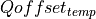 parameter, thus, it is not applied while selecting
the same cell again.
Counters in RRC connection establishment procedure¶
Name
Location
Msg
Monitored
by
Default
value
Limit not reached
Limit reached
ConnEstFailCount
eNB MAC
RachConfigCommon
in SIB2, HO REQ
and HO Ack
UE RRC
1
Increment the local counter.
Invalided the prev SIB2 msg,
and try random access
with the same cell.
Reset the local
counter and perform
cell selection.
Sequence diagram of the RRC Connection Reconfiguration procedure¶
Figure Sequence diagram of the RRC Connection Reconfiguration procedure
for the handover case shows how the RRC
Connection Reconfiguration procedure is modeled for the case where
MobilityControlInfo is provided, i.e., handover is to be performed.
As specified in [TS36331], After receiving the handover message,
the UE attempts to access the target cell at the first available RACH
occasion according to Random Access resource selection defined in [TS36321]_,
i.e. the handover is asynchronous. Consequently, when
allocating a dedicated preamble for the random access in the target
cell, E-UTRA shall ensure it is available from the first RACH occasion
the UE may use. Upon successful completion of the handover, the UE
sends a message used to confirm the handover. Note that the random
access procedure in this case is non-contention based, hence in a real
LTE system it differs slightly from the one used in RRC connection
established. Also note that the RA Preamble ID is signaled via the
Handover Command included in the X2 Handover Request ACK message sent
from the target eNB to the source eNB; in particular, the preamble is
included in the RACH-ConfigDedicated IE which is part of
MobilityControlInfo.
Sequence diagram of the RRC Connection Reconfiguration procedure
for the handover case¶
As previously anticipated, we provide two different models for the
transmission and reception of RRC messages: Ideal
and Real. Each of them is described in one of the following
subsections.
According to this model, implemented in the classes and LteUeRrcProtocolIdeal and
LteEnbRrcProtocolIdeal, all RRC messages and information elements
are transmitted between the eNB and the UE in an ideal fashion,
without consuming radio resources and without errors. From an
implementation point of view, this is achieved by passing the RRC data
structure directly between the UE and eNB RRC entities, without
involving the lower layers (PDCP, RLC, MAC, scheduler).
This model is implemented in the classes LteUeRrcProtocolReal and
LteEnbRrcProtocolReal and aims at modeling the transmission of RRC
PDUs as commonly performed in real LTE systems. In particular:
for every RRC message being sent, a real RRC PDUs is created
following the ASN.1 encoding of RRC PDUs and information elements (IEs)
specified in [TS36331]. Some simplification are made with respect
to the IEs included in the PDU, i.e., only those IEs that are
useful for simulation purposes are included. For a detailed list,
please see the IEs defined in lte-rrc-sap.h and compare with
[TS36331].
the encoded RRC PDUs are sent on Signaling Radio Bearers and are
subject to the same transmission modeling used for data
communications, thus including scheduling, radio resource
consumption, channel errors, delays, retransmissions, etc.
We now describe the Signaling Radio Bearer model that is used for the
Real RRC protocol model.
SRB0 messages (over CCCH):
RrcConnectionRequest: in real LTE systems, this is an RLC TM
SDU sent over resources specified in the UL Grant in the RAR (not
in UL DCIs); the reason is that C-RNTI is not known yet at this
stage. In the simulator, this is modeled as a real RLC TM RLC PDU
whose UL resources are allocated by the scheduler upon call to
SCHED_DL_RACH_INFO_REQ.
RrcConnectionSetup: in the simulator this is implemented as in
real LTE systems, i.e., with an RLC TM SDU sent over resources
indicated by a regular UL DCI, allocated with
SCHED_DL_RLC_BUFFER_REQ triggered by the RLC TM instance that is
mapped to LCID 0 (the CCCH).
SRB1 messages (over DCCH):
All the SRB1 messages modeled in the simulator (e.g.,
RrcConnectionCompleted) are implemented as in real LTE systems,
i.e., with a real RLC SDU sent over RLC AM using DL resources
allocated via Buffer Status Reports. See the RLC model
documentation for details.
SRB2 messages (over DCCH):
According to [TS36331], “SRB1 is for RRC messages (which may
include a piggybacked NAS message) as well as for NAS messages
prior to the establishment of SRB2, all using DCCH logical
channel”, whereas “SRB2 is for NAS messages, using DCCH
logical channel” and “SRB2 has a lower-priority than SRB1 and is
always configured by E-UTRAN after security
activation”. Modeling security-related aspects is not a
requirement of the LTE simulation model, hence we always use
SRB1 and never activate SRB2.
The messages defined in RRC SAP, common to all Ue/Enb SAP Users/Providers, are transported in a transparent container to/from a Ue/Enb. The encoding format for the different Information Elements are specified in [TS36331], using ASN.1 rules in the unaligned variant. The implementation in Ns3/Lte has been divided in the following classes:
Asn1Header : Contains the encoding / decoding of basic ASN types
RrcAsn1Header : Inherits Asn1Header and contains the encoding / decoding of common IE’s defined in [TS36331]
Rrc specific messages/IEs classes : A class for each of the messages defined in RRC SAP header
20.1.10.13.2.3. Asn1Header class - Implementation of base ASN.1 types¶
This class implements the methods to Serialize / Deserialize the ASN.1 types being used in [TS36331], according to the packed encoding rules in ITU-T X.691. The types considered are:
Boolean : a boolean value uses a single bit (1=true, 0=false).
Integer : a constrained integer (with min and max values defined) uses the minimum amount of bits to encode its range (max-min+1).
Bitstring : a bistring will be copied bit by bit to the serialization buffer.
Octetstring : not being currently used.
Sequence : the sequence generates a preamble indicating the presence of optional and default fields. It also adds a bit indicating the presence of extension marker.
Sequence…Of : the sequence…of type encodes the number of elements of the sequence as an integer (the subsequent elements will need to be encoded afterwards).
Choice : indicates which element among the ones in the choice set is being encoded.
Enumeration : is serialized as an integer indicating which value is used, among the ones in the enumeration, with the number of elements in the enumeration as upper bound.
Null : the null value is not encoded, although its serialization function is defined to provide a clearer map between specification and implementation.
The class inherits from ns-3 Header, but Deserialize() function is declared pure virtual, thus inherited classes having to implement it. The reason is that deserialization will retrieve the elements in RRC messages, each of them containing different information elements.
Additionally, it has to be noted that the resulting byte length of a specific type/message can vary, according to the presence of optional fields, and due to the optimized encoding. Hence, the serialized bits will be processed using PreSerialize() function, saving the result in m_serializationResult Buffer. As the methods to read/write in a ns3 buffer are defined in a byte basis, the serialization bits are stored into m_serializationPendingBits attribute, until the 8 bits are set and can be written to buffer iterator. Finally, when invoking Serialize(), the contents of the m_serializationResult attribute will be copied to Buffer::Iterator parameter
The focus of the LTE-EPC model is on the NAS Active state, which corresponds to EMM Registered, ECM connected, and RRC connected. Because of this, the following simplifications are made:
EMM and ECM are not modeled explicitly; instead, the NAS entity at the UE will interact directly with the MME to perform actions that are equivalent (with gross simplifications) to taking the UE to the states EMM Connected and ECM Connected;
the NAS also takes care of multiplexing uplink data packets coming from the upper layers into the appropriate EPS bearer by using the Traffic Flow Template classifier (TftClassifier).
the NAS does not support PLMN and CSG selection
the NAS does not support any location update/paging procedure in idle mode
Figure Sequence diagram of the attach procedure shows how the simplified NAS model
implements the attach procedure. Note that both the default and
eventual dedicated EPS bearers are activated as part of this
procedure.
The S1-U and S5 interfaces are modeled in a realistic way by encapsulating
data packets over GTP/UDP/IP, as done in real LTE-EPC systems. The
corresponding protocol stack is shown in Figure
LTE-EPC data plane protocol stack. As shown in the figure,
there are two different layers of
IP networking. The first one is the end-to-end layer, which provides end-to-end
connectivity to the users; this layer involves the UEs, the PGW and
the remote host (including eventual internet routers and hosts in
between), but does not involve the eNB and the SGW. In this version of LTE, the EPC
supports both IPv4 and IPv6 type users. The 3GPP unique 64 bit IPv6 prefix
allocation process for each UE and PGW is followed here. Each EPC is assigned
a unique 16 bit IPv4 and a 48 bit IPv6 network address from the pool of
7.0.0.0/8 and 7777:f00d::/32 respectively. In the end-to-end IP connection
between UE and PGW, all addresses are configured using these prefixes.
The PGW’s address is used by all UEs as the gateway to reach the internet.
The second layer of IP networking is the EPC local area network. This
involves all eNB nodes, SGW nodes and PGW nodes. This network is
implemented as a set of point-to-point links which connect each eNB
with its corresponding SGW node and a point-to-point link which connect
each SGW node with its corresponding PGW node;
thus, each SGW has a set of point-to-point devices, each providing
connectivity to a different eNB. By default, a 10.x.y.z/30 subnet
is assigned to each point-to-point link (a /30 subnet is the smallest
subnet that allows for two distinct host addresses).
As specified by 3GPP, the end-to-end IP
communications is tunneled over the local EPC IP network using
GTP/UDP/IP. In the following, we explain how this tunneling is
implemented in the EPC model. The explanation is done by discussing the
end-to-end flow of data packets.
Data flow in the downlink between the internet and the UE¶
To begin with, we consider the case of the downlink, which is depicted
in Figure Data flow in the downlink between the internet and the UE.
Downlink IPv4/IPv6 packets are generated from a generic remote host, and
addressed to one of the UE device. Internet routing will take care of
forwarding the packet to the generic NetDevice of the PGW node
which is connected to the internet (this is the Gi interface according
to 3GPP terminology). The PGW has a VirtualNetDevice which is
assigned the base IPv4 address of the EPC network; hence, static
routing rules will cause the incoming packet from the internet to be
routed through this VirtualNetDevice. In case of IPv6 address as destination,
a manual route towards the VirtualNetDevice is inserted in the routing table,
containing the 48 bit IPv6 prefix from which all the IPv6 addresses of the UEs
and PGW are configured. Such device starts the GTP/UDP/IP tunneling procedure,
by forwarding the packet to a dedicated application in the PGW node which
is called EpcPgwApplication. This application does the following operations:
it determines the SGW node to which it must route the traffic
for this UE, by looking at the IP destination address
(which is the address of the UE);
it classifies the packet using Traffic Flow Templates (TFTs) to
identify to which EPS Bearer it belongs. EPS bearers have a
one-to-one mapping to S5 Bearers, so this operation returns the
GTP-U Tunnel Endpoint Identifier (TEID) to which the packet
belongs;
it adds the corresponding GTP-U protocol header to the packet;
finally, it sends the packet over a UDP socket to the S5
point-to-point NetDevice, addressed to the appropriate SGW.
As a consequence, the end-to-end IP packet with newly added IP, UDP
and GTP headers is sent through one of the S5 links to the SGW, where
it is received and delivered locally (as the destination address of
the outermost IP header matches the SGW IP address). The local delivery
process will forward the packet, via an UDP socket, to a dedicated
application called EpcSgwApplication. This application then performs
the following operations:
it determines the eNB node to which the UE is attached, by looking
at the S5 TEID;
it maps the S5 TEID to get the S1 TEID. EPS bearers have a
one-to-one mapping to S1-U Bearers, so this operation returns the
S1 GTP-U Tunnel Endpoint Identifier (TEID) to which the packet
belongs;
it adds a new GTP-U protocol header to the packet;
finally, it sends the packet over a UDP socket to the S1-U
point-to-point NetDevice, addressed to the eNB to which the UE is
attached.
Finally, the end-to-end IP packet with newly added IP, UDP
and GTP headers is sent through one of the S1 links to the eNB, where
it is received and delivered locally (as the destination address of
the outermost IP header matches the eNB IP address). The local delivery
process will forward the packet, via an UDP socket, to a dedicated
application called EpcEnbApplication. This application then performs
the following operations:
it removes the GTP header and retrieves the S1 TEID which is
contained in it;
leveraging on the one-to-one mapping between S1-U bearers and
Radio Bearers (which is a 3GPP requirement), it determines the
Bearer ID (BID) to which the packet belongs;
it records the BID in a dedicated tag called EpsBearerTag,
which is added to the packet;
it forwards the packet to the LteEnbNetDevice of the eNB node via
a raw packet socket
Note that, at this point, the outmost header of the packet is the
end-to-end IP header, since the IP/UDP/GTP headers of the S1 protocol
stack have already been stripped. Upon reception of
the packet from the EpcEnbApplication, the LteEnbNetDevice will
retrieve the BID from the EpsBearerTag, and based on the BID
will determine the Radio Bearer instance (and the corresponding PDCP
and RLC protocol instances) which are then used to forward the packet
to the UE over the LTE radio interface. Finally, the LteUeNetDevice of
the UE will receive the packet, and delivery it locally to the IP
protocol stack, which will in turn delivery it to the application of
the UE, which is the end point of the downlink communication.
Data flow in the uplink between the UE and the internet¶
The case of the uplink is depicted in Figure Data flow in the uplink between the UE and the internet.
Uplink IP packets are generated by a generic application inside the UE,
and forwarded by the local TCP/IP stack to the LteUeNetDevice of the
UE. The LteUeNetDevice then performs the following operations:
it classifies the packet using TFTs and determines the
Radio Bearer to which the packet belongs (and the corresponding
RBID);
it identifies the corresponding PDCP protocol instance, which is
the entry point of the LTE Radio Protocol stack for this packet;
it sends the packet to the eNB over the LTE Radio Protocol stack.
The eNB receives the packet via its LteEnbNetDevice. Since there is a
single PDCP and RLC protocol instance for each Radio Bearer, the
LteEnbNetDevice is able to determine the BID of the packet. This BID
is then recorded onto an EpsBearerTag, which is added to the
packet. The LteEnbNetDevice then forwards the packet to the
EpcEnbApplication via a raw packet socket.
Upon receiving the packet, the EpcEnbApplication performs the
following operations:
it retrieves the BID from the EpsBearerTag in the packet;
it determines the corresponding EPS Bearer instance and GTP-U TEID by
leveraging on the one-to-one mapping between S1-U bearers and Radio
Bearers;
it adds a GTP-U header on the packet, including the TEID
determined previously;
it sends the packet to the SGW node via the UDP socket
connected to the S1-U point-to-point net device.
At this point, the packet contains the S1-U IP, UDP and GTP headers in
addition to the original end-to-end IP header. When the packet is
received by the corresponding S1-U point-to-point NetDevice of the
SGW node, it is delivered locally (as the destination address of
the outmost IP header matches the address of the point-to-point net
device). The local delivery process will forward the packet to the
EpcSgwApplication via the corresponding UDP socket. The
EpcSgwApplication then performs the following operations:
it removes the GTP header and retrieves the S1-U TEID;
it maps the S1-U TEID to get the S5 TEID to which the packet
belongs;
it determines the PGW to which it must send the packet from
the TEID mapping;
it add a new GTP-U protocol header to the packet;
finally, it sends the packet over a UDP socket to the S5
point-to-point NetDevice, addressed to the corresponding PGW.
At this point, the packet contains the S5 IP, UDP and GTP headers in
addition to the original end-to-end IP header. When the packet is
received by the corresponding S5 point-to-point NetDevice of the
PGW node, it is delivered locally (as the destination address of
the outmost IP header matches the address of the point-to-point net
device). The local delivery process will forward the packet to the
EpcPgwApplication via the corresponding UDP socket. The
EpcPgwApplication then removes the GTP header and forwards the
packet to the VirtualNetDevice. At this point, the outmost header
of the packet is the end-to-end IP header. Hence, if the destination
address within this header is a remote host on the internet, the
packet is sent to the internet via the corresponding NetDevice of the
PGW. In the event that the packet is addressed to another UE, the
IP stack of the PGW will redirect the packet again to the
VirtualNetDevice, and the packet will go through the downlink delivery
process in order to reach its destination UE.
Note that the EPS Bearer QoS is not enforced on the S1-U and S5
links, it is assumed that the overprovisioning of the link bandwidth
is sufficient to meet the QoS requirements of all bearers.
The S1-AP interface provides control plane interaction between the eNB
and the MME. In the simulator, this interface is modeled in a realistic
fashion transmitting the encoded S1AP messages and information elements
specified in [TS36413] on the S1-MME link.
The S5 interface provides control plane interaction between the SGW
and the PGW. The S11 interface provides control plane interaction between
the SGw and the MME. Both interfaces use the GPRS Tunneling Protocol (GTPv2-C)
to tunnel signalling messages [TS29274] and use UDP as transport protocol.
In the simulator, these interfaces and protocol are modeled in a realistic
fashion transmitting the encoded GTP-C messages.
The GTPv2-C primitives that are modeled are:
CREATE SESSION REQUEST
CREATE SESSION RESPONSE
MODIFY BEARER REQUEST
MODIFY BEARER RESPONSE
DELETE SESSION REQUEST
DELETE SESSION RESPONSE
DELETE BEARER COMMAND
DELETE BEARER REQUEST
DELETE BEARER RESPONSE
Of these primitives, the first two are used upon initial UE attachment for the establishment
of the S1-U and S5 bearers. Section NAS shows the implementation of the attach
procedure. The other primitives are used during the handover to switch the S1-U bearers from
the source eNB to the target eNB as a consequence of the reception by the MME of a
PATH SWITCH REQUEST S1-AP message.
The X2 interface interconnects two eNBs [TS36420]. From a logical
point of view, the X2 interface is a point-to-point interface between
the two eNBs. In a real E-UTRAN, the logical point-to-point interface
should be feasible even in the absence of a physical direct connection
between the two eNBs. In the X2 model implemented in the simulator,
the X2 interface is a point-to-point link between the two eNBs. A
point-to-point device is created in both eNBs and the two
point-to-point devices are attached to the point-to-point link.
For a representation of how the X2 interface fits in the overall
architecture of the LENA simulation model, the reader is referred to
the figure Overview of the LTE-EPC simulation model.
The X2 interface implemented in the simulator provides detailed implementation of the following elementary procedures of the Mobility Management functionality [TS36423]:
Handover Request procedure
Handover Request Acknowledgement procedure
SN Status Transfer procedure
UE Context Release procedure
These procedures are involved in the X2-based handover. You can find
the detailed description of the handover in section 10.1.2.1 of
[TS36300]. We note that the simulator model currently supports only
the seamless handover as defined in Section 2.6.3.1 of [Sesia2009];
in particular, lossless handover as described in Section 2.6.3.2 of
[Sesia2009] is not supported at the time of this writing.
Figure Sequence diagram of the X2-based handover below shows the interaction of
the entities of the X2 model in the simulator. The shaded labels indicate the
moments when the UE or eNodeB transition to another RRC state.
The figure also shows two timers within the handover procedure: the handover
leaving timer is maintained by the source eNodeB, while the handover joining
timer by the target eNodeB. The duration of the timers can be configured in
the HandoverLeavingTimeoutDuration and HandoverJoiningTimeoutDuration
attributes of the respective LteEnbRrc instances. When one of these timers
expire, the handover procedure is considered as failed.
However, there is no proper handling of handover failure in the current version
of LTE module. Users should tune the simulation properly in order to avoid
handover failure, otherwise unexpected behaviour may occur. Please refer to
Section Tuning simulation with handover of the User Documentation for some
tips regarding this matter.
The X2 model is an entity that uses services from:
the X2 interfaces,
They are implemented as Sockets on top of the point-to-point devices.
They are used to send/receive X2 messages through the X2-C and X2-U interfaces (i.e. the point-to-point device attached to the point-to-point link) towards the peer eNB.
the S1 application.
Currently, it is the EpcEnbApplication.
It is used to get some information needed for the Elementary Procedures of the X2 messages.
and it provides services to:
the RRC entity (X2 SAP)
to send/receive RRC messages. The X2 entity sends the RRC message as a transparent container in the X2 message. This RRC message is sent to the UE.
Figure Implementation Model of X2 entity and SAPs shows the implementation model of the X2 entity and its relationship with all the other entities and services in the protocol stack.
The RRC entity manages the initiation of the handover procedure. This is done in the Handover Management submodule of the eNB RRC entity. The target eNB may perform some Admission Control procedures. This is done in the Admission Control submodule. Initially, this submodule will accept any handover request.
The X2-C interface is the control part of the X2 interface and it is
used to send the X2-AP PDUs (i.e. the elementary procedures).
In the original X2 interface control plane protocol stack, SCTP is
used as the transport protocol but currently, the SCTP protocol is not
modeled in the ns-3 simulator and its implementation is out-of-scope
of the project. The UDP protocol is used as the datagram oriented
protocol instead of the SCTP protocol.
The X2-U interface is used to send the bearer data when there is DL
forwarding during the execution of the X2-based handover
procedure. Similarly to what done for the S1-U interface, data packets
are encapsulated over GTP/UDP/IP when being sent over this
interface. Note that the EPS Bearer QoS is not enforced on the X2-U
links, it is assumed that the overprovisioning of the link bandwidth
is sufficient to meet the QoS requirements of all bearers.
The X2 service interface is used by the RRC entity to send and receive messages of the X2 procedures. It is divided into two parts:
the EpcX2SapProvider part is provided by the X2 entity and used by the RRC entity and
the EpcX2SapUser part is provided by the RRC entity and used by the RRC entity.
The primitives that are supported in our X2-C model are described in the following subsections.
20.1.13.2.1. X2-C primitives for handover execution¶
The following primitives are used for the X2-based
handover:
HANDOVER REQUEST
HANDOVER REQUEST ACK
HANDOVER PREPARATION FAILURE
SN STATUS STRANSFER
UE CONTEXT RELEASE
all the above primitives are used by the currently implemented RRC
model during the preparation and execution of the handover
procedure. Their usage interacts with the RRC state machine;
therefore, they are not meant to be used for code customization, at
least unless it is desired to modify the RRC state machine.
The following primitives can be used to implement Self-Organized Network (SON) functionalities:
LOAD INFORMATION
RESOURCE STATUS UPDATE
note that the current RRC model does not actually use these
primitives, they are included in the model just to make it possible to
develop SON algorithms included in the RRC logic that make use of
them.
As a first example, we show here how the load information primitive
can be used. We assume that the LteEnbRrc has been modified to include
the following new member variables:
for a detailed description of the type of these variables, we suggest
to consult the file epc-x2-sap.h, the corresponding doxygen
documentation, and the references therein to the relevant sections of
3GPP TS 36.423. Now, assume that at run time these variables have been
set to meaningful values following the specifications just
mentioned. Then, you can add the following code in the LteEnbRrc class
implementation in order to send a load information primitive:
The above code allows the source eNB to send the message. The method
LteEnbRrc::DoRecvLoadInformation will be called when the target
eNB receives the message. The desired processing of the load
information should therefore be implemented within that method.
In the following second example we show how the resource
status update primitive is used. We assume that the LteEnbRrc has been
modified to include the following new member variable:
EpcX2Sap::CellMeasurementResultItemm_cmri;
similarly to before, we refer to epc-x2-sap.h and the references
therein for detailed information about this variable type.
Again, we assume that the variable has been already set to a
meaningful value. Then, you can add the following code in order to
send a resource status update:
The method eEnbRrc::DoRecvResourceStatusUpdate will be called when
the target eNB receives the resource status update message. The
desired processing of this message should therefore be implemented
within that method.
Finally, we note that the setting and processing of the appropriate
values for the variable passed to the above described primitives is
deemed to be specific of the SON algorithm being implemented, and
hence is not covered by this documentation.
The S11 interface provides control plane interaction between the SGW
and the MME using the GTPv2-C protocol specified in [TS29274]. In the
simulator, this interface is modeled in an ideal
fashion, with direct interaction between the SGW and the MME objects,
without actually implementing the encoding of the messages and without actually
transmitting any PDU on any link.
The S11 primitives that are modeled are:
CREATE SESSION REQUEST
CREATE SESSION RESPONSE
MODIFY BEARER REQUEST
MODIFY BEARER RESPONSE
Of these primitives, the first two are used upon initial UE attachment
for the establishment of the S1-U bearers; the other two are used
during handover to switch the S1-U bearers from the source eNB to the
target eNB as a consequence of the reception by the MME of a PATH
SWITCH REQUEST S1-AP message.
Figure Sequence diagram of Downlink Power Control shows the sequence diagram of
setting downlink P_A value for UE, highlighting the interactions between
the RRC and the other entities. FR algorithm triggers RRC to change P_A values
for UE. Then RRC starts RrcConnectionReconfiguration function to inform UE
about new configuration. After successful RrcConnectionReconfiguration, RRC
can set P_A value for UE by calling function SetPa from CphySap, value is
saved in new map m_paMap which contain P_A values for each UE served by eNb.
When LteEnbPhy starts new subframe, DCI control messages are processed to get
vector of used RBs. Now also GeneratePowerAllocationMap(uint16_t rnti, int rbId)
function is also called. This function check P_A value for UE, generate power
for each RB and store it in m_dlPowerAllocationMap. Then this map is used by
CreateTxPowerSpectralDensityWithPowerAllocation function to create
Ptr<SpectrumValue> txPsd.
PdschConfigDedicated (TS 36.331, 6.3.2 PDSCH-Config) was added in
LteRrcSap::PhysicalConfigDedicated struct, which is used in
RrcConnectionReconfiguration process.
Uplink power control controls the transmit power of the different uplink physical
channels. This functionality is described in 3GPP TS 36.213 section 5.
Uplink Power Control is enabled by default, and can be disabled by attribute system:
Two Uplink Power Control mechanisms are implemented:
Open Loop Uplink Power Control: the UE transmission power depends on estimation of
the downlink path-loss and channel configuration
Closed Loop Uplink Power Control: as in Open Loop, in addition eNB can control the UE
transmission power by means of explicit Transmit Power Control TPC commands transmitted
in the downlink.
To switch between these two mechanism types, one should change parameter:
The setting of the UE Transmit power for a Physical Uplink Shared Channel (PUSCH) transmission
is defined as follows:
If the UE transmits PUSCH without a simultaneous PUCCH for the serving cell , then the
UE transmit power 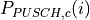 for PUSCH transmission in subframe for the
serving cell is given by:
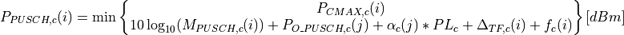
If the UE transmits PUSCH simultaneous with PUCCH for the serving cell , then the UE
transmit power for the PUSCH transmission in subframe for
the serving cell is given by:
Since Uplink Power Control for PUCCH is not implemented, this case is not implemented as well.
If the UE is not transmitting PUSCH for the serving cell , for the accumulation of
TPC command received with DCI format 3/3A for PUSCH, the UE shall assume that the UE transmit
power for the PUSCH transmission in subframe for the serving
cell is computed by
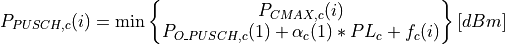
where:
is the configured UE transmit power defined in 3GPP 36.101. Table 6.2.2-1
in subframe for serving cell and 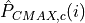 is the linear
value of . Default value for is 23 dBm
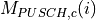 is the bandwidth of the PUSCH resource assignment expressed in number
of resource blocks valid for subframe and serving cell .
is a parameter composed of the sum of a component
provided from higher layers for and a component provided by higher
layers for for serving cell . SIB2 message needs to be extended to carry these two
components, but currently they can be set via attribute system:
is the downlink pathloss estimate calculated in the UE for serving cell in dB
and 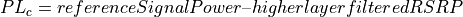, where
is provided by higher layers and RSRP. is provided in SIB2 message
for
and for 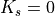. Only second case is implemented.
is component of Closed Loop Power Control. It is the current PUSCH power control
adjustment state for serving cell .
If Accumulation Mode is enabled is given by:
where: is a correction value, also referred to as a TPC command and is included
in PDCCH with DCI; 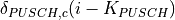 was signalled on PDCCH/EPDCCH with DCI for
serving cell on subframe ; for FDD.
If UE has reached for serving cell , positive TPC commands for serving cell
are not be accumulated. If UE has reached minimum power, negative TPC commands are not be accumulated.
Minimum UE power is defined in TS36.101 section 6.2.3. Default value is -40 dBm.
If Accumulation Mode is not enabled is given by:
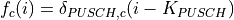
where: is a correction value, also referred to as a TPC command and is included
in PDCCH with DCI; was signalled on PDCCH/EPDCCH with DCI for
serving cell on subframe ; for FDD.
Mapping of TPC Command Field in DCI format 0/3/4 to absolute and accumulated
values is defined in TS36.231 section 5.1.1.1 Table 5.1.1.1-2
Since all uplink control messages are an ideal messages and do not consume any radio resources,
Uplink Power Control for PUCCH is not needed and it is not implemented.
The setting of the UE Transmit power for the SRS transmitted on subframe
for serving cell is defined by
where:
is the configured UE transmit power defined in 3GPP 36.101. Table 6.2.2-1.
Default value for is 23 dBm
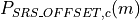 is semi-statically configured by higher layers for for
serving cell . For SRS transmission given trigger type 0 then and for SRS
transmission given trigger type 1 then .
For P_Srs_Offset_Value is computed with equation:
This parameter is configurable by attribute system:
is the bandwidth of the SRS transmission in subframe for serving
cell expressed in number of resource blocks. In current implementation SRS is sent
over entire UL bandwidth.
This section describes the ns-3 support for Fractional Frequency Reuse
algorithms. All implemented algorithms are described in [ASHamza2013].
Currently 7 FR algorithms are implemented:
ns3::LteFrNoOpAlgorithm
ns3::LteFrHardAlgorithm
ns3::LteFrStrictAlgorithm
ns3::LteFrSoftAlgorithm
ns3::LteFfrSoftAlgorithm
ns3::LteFfrEnhancedAlgorithm
ns3::LteFfrDistributedAlgorithm
New LteFfrAlgorithm class was created and it is a abstract class for
Frequency Reuse algorithms implementation. Also, two new SAPs between
FR-Scheduler and FR-RRC were added.
Figure Sequence diagram of Scheduling with FR algorithm shows the sequence diagram of
scheduling process with FR algorithm. In the beginning of scheduling
process, scheduler asks FR entity for available RBGs. According to
implementation FR returns all RBGs available in cell or filter them based
on its policy. Then when trying to assign some RBG to UE, scheduler asks FR
entity if this RBG is allowed for this UE. When FR returns true, scheduler
can assign this RBG to this UE, if not scheduler is checking another RBG
for this UE. Again, FR response depends on implementation and policy applied
to UE.
The NoOp FR algorithm (LteFrNoOpAlgorithm class) is implementation of
Full Frequency Reuse scheme, that means no frequency partitioning is performed
between eNBs of the same network (frequency reuse factor, FRF equals 1). eNBs
uses entire system bandwidth and transmit with uniform power over all RBGs. It
is the simplest scheme and is the basic way of operating an LTE network. This
scheme allows for achieving the high peak data rate. But from the other hand,
due to heavy interference levels from neighbouring cells, cell-edge users
performance is greatly limited.
In ns-3, the NoOp FR algorithm always allows scheduler to use full bandwidth
and allows all UEs to use any RBG. It simply does nothing new (i.e. it does not
limit eNB bandwidth, FR algorithm is disabled), it is the simplest implementation
of FrAlgorithm class and is installed in eNb by default.
The Hard Frequency Reuse algorithm provides the simplest scheme which allows to
reduce inter-cell interference level. In this scheme whole frequency bandwidth is
divided into few (typically 3, 4, or 7) disjoint sub-bands. Adjacent eNBs are
allocated with different sub-band. Frequency reuse factor equals the number
of sub-bands. This scheme allows to significantly reduce ICI at the cell edge,
so the performance of cell-users is improved. But due to the fact, that each
eNB uses only one part of whole bandwidth, peak data rate level is also reduced
by the factor equal to the reuse factor.
In our implementation, the Hard FR algorithm has only vector of RBGs available
for eNB and pass it to MAC Scheduler during scheduling functions. When scheduler
ask, if RBG is allowed for specific UE it always return true.
Strict Frequency Reuse scheme is combination of Full and Hard Frequency Reuse
schemes. It consists of dividing the system bandwidth into two parts which will
have different frequency reuse. One common sub-band of the system bandwidth is
used in each cell interior (frequency reuse-1), while the other part of the
bandwidth is divided among the neighboring eNBs as in hard frequency reuse
(frequency reuse-N, N>1), in order to create one sub-band with a low inter-cell
interference level in each sector. Center UEs will be granted with the fully-reused
frequency chunks, while cell-edge UEs with orthogonal chunks. It means that interior
UEs from one cell do not share any spectrum with edge UEs from second cell, which
reduces interference for both. As can be noticed, Strict FR requires a total of
N + 1 sub-bands, and allows to achieve RFR in the middle between 1 and 3.
Figure Strict Frequency Reuse scheme below presents frequency and
power plan for Strict Frequency Reuse scheme with a cell-edge reuse factor of N = 3.
In our implementation, Strict FR algorithm has two maps, one for each sub-band.
If UE can be served within private sub-band, its RNTI is added to m_privateSubBandUe
map. If UE can be served within common sub-band, its RNTI is added to
m_commonSubBandUe map. Strict FR algorithm needs to decide within which sub-band
UE should be served. It uses UE measurements provided by RRB and compare them
with signal quality threshold (this parameter can be easily tuned by attribute
mechanism). Threshold has influence on interior to cell radius ratio.
In Soft Frequency Reuse (SFR) scheme each eNb transmits over the entire system
bandwidth, but there are two sub-bands, within UEs are served with different power
level. Since cell-center UEs share the bandwidth with neighboring cells, they
usually transmit at lower power level than the cell-edge UEs. SFR is more bandwidth
efficient than Strict FR, because it uses entire system bandwidth, but it also
results in more interference to both cell interior and edge users.
There are two possible versions of SFR scheme:
In first version, the sub-band dedicated for the cell-edge UEs may also be used
by the cell-center UEs but with reduced power level and only if it is not occupied
by the cell-edge UEs. Cell-center sub-band is available to the centre UEs only.
Figure Soft Frequency Reuse scheme version 1 below presents frequency and
power plan for this version of Soft Frequency Reuse scheme.
In second version, cell-center UEs do not have access to cell-edge sub-band.
In this way, each cell can use the whole system bandwidth while reducing the
interference to the neighbors cells. From the other hand, lower ICI level at
the cell-edge is achieved at the expense of lower spectrum utilization.
Figure Soft Frequency Reuse scheme version 2 below presents frequency
and power plan for this version of Soft Frequency Reuse scheme.
SFR algorithm maintain two maps. If UE should be served with lower power level,
its RNTI is added to m_lowPowerSubBandUe map. If UE should be served with higher
power level, its RNTI is added to m_highPowerSubBandUe map. To decide with which
power level UE should be served SFR algorithm utilize UE measurements, and
compares them to threshold. Signal quality threshold and PdschConfigDedicated
(i.e. P_A value) for inner and outer area can be configured by attributes system.
SFR utilizes Downlink Power Control described here.
Soft Fractional Frequency Reuse (SFFR) is an combination of Strict and Soft
Frequency Reuse schemes. While Strict FR do not use the subbands allocated
for outer region in the adjacent cells, soft FFR uses these subbands for the
inner UEs with low transmit power. As a result, the SFFR, like SFR, use the
subband with high transmit power level and with low transmit power level.
Unlike the Soft FR and like Strict FR, the Soft FFR uses the common sub-band
which can enhance the throughput of the inner users.
Enhanced Fractional Frequency Reuse (EFFR) described in [ZXie2009] defines 3
cell-types for directly neighboring cells in a cellular system, and reserves
for each cell-type a part of the whole frequency band named Primary Segment,
which among different type cells should be orthogonal. The remaining subchannels
constitute the Secondary Segment. The Primary Segment of a cell-type is
at the same time a part of the Secondary Segments belonging to the other two
cell-types. Each cell can occupy all subchannels of its Primary Segment at
will, whereas only a part of subchannels in the Secondary Segment can be used
by this cell in an interference-aware manner.The Primary Segment of each cell
is divided into a reuse-3 part and reuse-1 part. The reuse-1 part can be reused
by all types of cells in the system, whereas reuse-3 part can only be exclusively
reused by other same type cells( i.e. the reuse-3 subchannels cannot be reused
by directly neighboring cells). On the Secondary Segment cell acts as a guest,
and occupying secondary subchannels is actually reuse the primary subchannels
belonging to the directly neighboring cells, thus reuse on the Secondary Segment
by each cell should conform to two rules:
monitor before use
resource reuse based on SINR estimation
Each cell listens on every secondary subchannel all the time. And before occupation,
it makes SINR evaluation according to the gathered channel quality information (CQI)
and chooses resources with best estimation values for reuse. If CQI value for RBG is
above configured threshold for some user, transmission for this user can be performed
using this RBG.
In [ZXie2009] scheduling process is described, it consist of three steps and two
scheduling polices. Since none of currently implemented schedulers allow for
this behaviour, some simplification were applied. In our implementation reuse-1
subchannels can be used only by cell center users. Reuse-3 subchannels can be used by
edge users, and only if there is no edge user, transmission for cell center users can
be served in reuse-3 subchannels.
Enhanced Fractional Fractional Frequency Reuse scheme¶
20.1.16.2.7. Distributed Fractional Frequency Reuse¶
This Distributed Fractional Frequency Reuse Algorithm was presented in [DKimura2012]. It
automatically optimizes cell-edge sub-bands by focusing on user distribution (in particular,
receive-power distribution). This algorithm adaptively selects RBs for cell-edge sub-band on
basis of coordination information from adjacent cells and notifies the base stations of the
adjacent cells, which RBs it selected to use in edge sub-band. The base station of each cell
uses the received information and the following equation to compute cell-edge-band metric
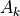 for each RB.
where is a set of neighbor cells, is the RNTP from the -th
neighbor cell. It takes a value of 1 when the -th RB in the -th neighbor cell is used
as a cell-edge sub-band and 0 otherwise. The symbol denotes weight with respect to adjacent
cell , that is, the number of users for which the difference between the power of the signal
received from the serving cell and the power of the signal received from the adjacent cell
is less than a threshold value (i.e., the number of users near the cell edge in the service cell). A large
received power difference means that cell-edge users in the -th cell suffer strong interference
from the -th cell.
The RB for which metric is smallest is considered to be least affected by interference from
another cell. Serving cell selects a configured number of RBs as cell-edge sub-band in ascending order
of . As a result, the RBs in which a small number of cell-edge users receive high
interference from adjacent base stations are selected.
The updated RNTP is then sent to all the neighbor cells. In order to avoid the meaningless oscillation
of cell-edge-band selection, a base station ignores an RNTP from another base station that has larger
cell ID than the base station.
Repeating this process across all cells enables the allocation of RBs to cell-edge areas to be optimized
over the system and to be adjusted with changes in user distribution.
This section describes the ns-3 support for Carrier Aggregation.
The references in the standard are [TS36211], [TS36213] and [TS36331].
Note: Carrier Aggregation was introduced in release 3.27 and currently, only works in downlink.
3GPP standardizes, in release R10, the Carrier Aggregation (CA) technology.
This technology consists of the possibility, to aggregate radio resources belonging to
different carriers, in order to have more bandwidth available, and to achieve a higher
throughput. Carrier Aggregation as defined by 3GPP can be used with both TDD and FDD.
Since ns-3 only supports FDD LTE implementation, we will consider only this case in
this section. Each aggregated carrier is referred to as a component carrier, CC.
The component carrier can have a bandwidth of 1.4, 3, 5, 10, 15 or 20 MHz and a maximum
of five component carriers can be aggregated, hence the maximum aggregated bandwidth is
100 MHz. In FDD the number of aggregated carriers can be different in DL and UL. However,
the number of UL component carriers is always equal to or lower than the number of DL
component carriers. The individual component carriers can also be of different bandwidths.
When carrier aggregation is used there are a number of serving cells, one for each
component carrier. The coverage of the serving cells may differ, for example due to
that CCs on different frequency bands will experience different pathloss. The RRC
connection is only handled by one cell, the Primary serving cell, served by the
Primary component carrier (DL and UL PCC). It is also on the DL PCC that the UE
receives NAS information, such as security parameters.
3GPP defines three different CA bandwidth classes in releases 10 and 11 (where ATBC
is Aggregated Transmission Bandwidth Configuration):
Class A: ATBC 100, maximum number of CC = 1
Class B: ATBC 100, maximum number of CC = 2
Class C: 100 ATBC 200, maximum number of CC = 2
Figure CA impact on different layers of LTE protocol stack (from 3gpp.org) (from 3gpp.org) shows the main
impact of CA technology on the different layers of the LTE protocol stack.
Introduction of carrier aggregation influences mainly the MAC and new RRC messages
are introduced. In order to keep R8/R9 compatibility the protocol changes will be kept
to a minimum. Basically each component carrier is treated as an R8 carrier. However some
changes are required, such as new RRC messages in order to handle the secondary component
carrier (SCC), and MAC must be able to handle scheduling on a number of CCs. In the
following we describe the impact of the carrier aggregation implementation on the different
layers of the LTE protocol stack in ns-3.
CA impact on different layers of LTE protocol stack (from 3gpp.org)¶
The main impacts on the RRC layer are related to secondary carrier configuration and
measurements reporting. To enable these features we have enhanced the already existing
procedures for the RRC Connection Reconfiguration and UE RRC Measurements Model.
The carrier aggregation enabling procedure is shown in figure A schematic overview of the secondary carrier enabling procedure.
As per 3GPP definition, the secondary cell is a cell, operating on a secondary frequency,
which may be configured once an RRC connection is established and which may be used to
provide additional radio resources. Hence, the procedure starts when the UE is in the
CONNECTED_NORMALLY state (see the RRC state machine description). This part of the procedure
is the same as in the previous architecture. In order to simplify the implementation,
the UE Capability Inquiry and UE Capability Information are not implemented. This
implies to assume that each UE can support the carrier aggregation, and any specific
configuration provided by the eNB to which is attached. The eNB RRC sends to the UE the
secondary carrier configuration parameters through the RRC Connection Reconfiguration
procedure. This procedure may be used for various purposes related to modifications of
the RRC connection, e.g. to establish, modify or release RBs, to perform handover, to
setup, modify or release measurements, to add, modify and release secondary cells (SCells).
At UE side, the RRC is extended to configure the lower layers, in such a way that the
SCell(s) are considered. Once the carriers are configured, the Reconfiguration Completed
message is sent back to the eNB RRC, informing the eNB RRC and CCM that the secondary
carriers have been properly configured. The RRC layer at both the UE and the eNB sides
is extended to allow measurement reporting for the secondary carriers. Finally, in order
to allow the procedures for configuration and measurement reporting, the RRC is enhanced
to support serialization and deserialization of RRC message structures that carry information
related to the secondary carriers, e.g., if the RRCConnectionReconfiguration message
includes sCellToAddModList structure, SCell addition or modification will be performed,
or, if it contains measConfig the measurement reporting will be configured. To allow
transmission of this information the following structures are implemented for the sCell:
RadioResourceConfigCommonSCell, RadioResourceConfigDedicatedSCell and
PhysicalConfigDedicatedSCell and NonCriticalExtensionConfiguration.
RadioResourceConfigCommonSCell and RadioResourceConfigDedicatedSCell are
used for SCell addition and modification (see TS 36.331, 5.3.10.3b).
PhysicalConfigDedicatedSCell is used for physical channel reconfiguration
(see TS 36.331, 5.3.10.6). Finally, NonCriticalExtensionConfiguration is used to
carry information of sCellToAddModeList and sCellToReleaseList,
which is a modified structure comparing to TS 36.331, 6.6.2, according to which these
are directly in the root of RRCConnectionReconfiguration message. Measurement
reporting is extended with measResultSCell structure to include RSRP and RSRQ
measurements for each configured SCell. However, the measurement report triggering
event A6 (neighbour becomes offset better than SCell) is not implemented yet.
A schematic overview of the secondary carrier enabling procedure¶
Handover is possible between different component carriers on the same
eNB (i.e., intra-eNB handover from one frequency to another) and between
carriers on different eNB (i.e., inter-eNB). One constraint for inter-eNB
handovers is that both eNB must have the same number of component carriers.
The impact on the RLC layer is relatively small. There is some impact on configuration of
the buffer and the usage of SAP interfaces between RLC and MAC. Since the capacity of the
lower layers increases with the carrier aggregation it is necessary to accordingly adjust
the size of the RLC buffer. The impact on the implementation of the RLC layer is very small
thanks to the design choice that allows the CCM manager to serve the different RLC instances
through the LteMacSapProviderinterface. Thanks to this design choice, the RLC is using
the same interface as in the earlier LTE module architecture, the LteMacSapProvider,
but the actual SAP provider in the new architecture is the CCM (some class that inherits
LteEnbComponentCarrierManager). The CCM acts as a proxy, it receives function calls
that are meant for the MAC, and forwards them to the MAC of the different component
carriers. Additionally, it uses the information of the UEs and the logical channels for
its own functionalities.
The impact on the MAC layer depends on the CA scheduling scheme in use. Two different
scheduling schemes are proposed in R10 and are shown in
figure CA scheduling schemes (from 3gpp.org).
The CIF (Carrier Indicator Field) on PDCCH (represented by the red area) indicates
on which carrier the scheduled resource is located. In the following we describe both
the schemes:
scheduling grant and resources on the same carrier. One PDCCH is supported per carrier.
cross-carrier scheduling: it is used to schedule resources on the secondary carrier
without PDCCH.
Current implementation covers only option 1, so there is no cross-carrier scheduling.
The MAC layer of the eNodeB has suffered minor changes and they are mainly related to
addition of component carrier information in message exchange between layers.
The impact on PHY layer is minor. There is an instance of PHY layer per each component
carrier and the SAP interface functions remain unchanged. As shown
in CA scheduling schemes (from 3gpp.org) the difference is that since there are
multiple PHY instances, there are also multiple instances of PDCCH, HARQ, ACK/NACK and
CSI per carrier. So, at the eNB PHY, the changes are related to the addition of the
component carrier id information, while at the UE PHY the information of the Component
Carrier is used for some functionalities that depend on the Component Carrier to which
the PHY instance belongs. For example, the UE PHY is extended to allow disabling of
the sounding reference signal (SRS) at the secondary carriers. This is necessary
because there is one UE PHY instance per component carrier, but according
to CA scheduling schemes (from 3gpp.org), only a single carrier is used
and the uplink traffic is transmitted only over the primary carrier.
This section briefly introduces the software design and implementation of the
carrier aggregation functionality.
Both LteEnbNetDevice and LteUeNetDevice are created by the LteHelper
using the method InstallSingleEnbDevice and InstallSingleUeDevice. These
functions are now extended to allow the carrier aggregation configuration. In the
following we explain the main differences comparing to the previous architecture.
Figure Changes in LteEnbNetDevice to support CA shows the attributes and associations
of the LteEnbNetDevice that are affected by the implementation, or are created
in order to support the carrier aggregation functionality. Since LteEnbNetDevice
may have several component carriers, the attributes that were formerly part of
the LteEnbNetDevice and are carrier specific are migrated to the ComponentCarrier
class, e.g. physical layer configuration parameters. The attributes that are
specific for the eNB component carrier are migrated to ComponentCarrierEnb, e.g.
pointers to MAC, PHY, scheduler, fractional frequency reuse instances.
LteEnbNetDevice can contain pointers to several ComponentCarrierEnb instances.
This architecture allows that each CC may have its own configuration for PHY, MAC,
scheduling algorithm and franctional frequency reuse algorithm. These attributes are
currently maintained also in the LteEnbNetDevice for backward compatibility purpose.
By default the LteEnbNetDevice attributes are the same as the
primary carrier attributes.
Figure Changes in LteUeNetDevice to support CA shows the attributes and associations
of LteUeNetDevice that are affected by the carrier aggregation implementation.
Similarly, to the changes in LteEnbNetDevice, pointers that are specific to UE
component carrier are migrated to the ComponentCarrierUe class.
LteUeNetDevice has maintained m_dlEarfcn for initial cell selection purposes.
The main impact is the insertion of the LteEnbComponentCarrierManager class
in the middle of the LTE protocol stack. During the design phase it was
decided to keep the same SAP interfaces design that existed between MAC and RLC
in order to avoid unnecessary changes in these parts of protocol stack.
To achieve this the LteEnbComponentCarrierManager implements all functions
that were previously exposed by RLC to MAC through LteMacSapUser interface.
It also implements functions that were previously exposed by MAC to RLC through
the LteMacSapProvider interface. In this way, the carrier aggregation is
transparent to upper and lower layers. The only difference is that the MAC
instance sees now only one LteMacSapUser, whereas formerly it was seeing only
one LteMacSapUser per RLC instance.
The LteEnbComponentCarrierManager is responsible for the forwarding messages
in both directions. In the current implementation, a PDCP and a RLC instances are
activated each time a new data radio bearer is configured. The correspondence
between a new data radio bearer and a RLC instance is one to one. In order to
maintain the same behavior, when a new logical channel is activated, the logical
channel configurations is propagated to each MAC layer object in “as is” fashion.
Figure Sequence Diagram of downlink buffer status reporting (BSR) with CA shows a sequence diagram of downlink buffer status
reporting with a carrier aggregation implementation of only one secondary carrier.
Each time that an RLC instance sends a buffer status report (BSR), the
LteEnbComponentCarrierManager propagates the BSR to the MAC instances.
The LteEnbComponentCarrierManager may modify a BSR before sending it to the
MAC instances. This modification depends on the traffic split algorithm implemented
in CCM class that inherits LteEnbComponentCarrierManager.
Sequence Diagram of downlink buffer status reporting (BSR) with CA¶
20.1.17.2.2. CA impact on control plane of eNodeB¶
Figure eNB Control Plane Architecture shows the class diagram of the control plane
at the eNB. During the design phase it was decided to maintain the same hooks as in
the former architecture. To do so, at each component carrier the PHY and the MAC are
directly associated to the RRC instance. However, the RRC instance is additionally
connected to the LteEnbComponentCarrierManager, which is responsible for enabling
and disabling the component carriers. When the simulation starts, the number of
component carrier is fixed, but only the primary carrier component is enabled.
Depending on the LteEnbComponentCarrierManager algorithm the other carrier
components could be activated or not.
Figure UE Data Plane Architecture shows the relation between the different classes
related to the UE data plane. The UE data plane architecture is similar to the eNB data
plane implementation. The LteUeComponentCarrierManager is responsible to (re)map
each MacSapUserProvider to the corresponding RLC instance or to the proper MAC
instance. The channel remapping depends on algorithm used as LteUeComponentCarrierManager.
A particular case is represented by the UE buffer status report (BSR) to eNB.
Since, i) the standard does not specify how the BSR has to be reported on each component
carrier and ii) it is decided to map one-to-one the logical channel to each MAC layer,
the only way to send BSRs to the eNB is through the primary carrier.
Figure Uplink buffer status reporting with CA shows the sequence diagram.
Each time a BSR is generated, the LteUeComponentCarrierManager sends it through
the primary carrier component. When the primary component carrier at the eNB receives
the BSR, it sends it to LteEnbComponentCarrierManager. The latter, according to
algorithm dependent policies, forwards a BSR to component carriers. The communication
between the LteEnbMac and the LteEnbComponentCarrierManager is done through a
specific set of SAP functions which are implemented in the LteUlCcmRrcSapUser and
the LteUlCcmRrcSapProvider.
Figure UE Control Plane Architecture shows the relation between the different classes
associated to the UE control plane. The control plane implementation at the UE is basically
the same as the eNB control plane implementation. Each component carrier control SAP
(both for PHY and MAC layer objects) is linked in a one-to-one fashion directly to the RRC
instance. The Ue RRC instance is then connected to the LteUeComponentCarrierManager
in the same way as in the eNB.
CCHelper is the class that is implemented to help the configuration of the physical
layer parameters, such as uplink and downlink,bandwidth and EARFCN of each carrier.
The Component carrier manager (CCM) is also developed by using the SAP interface design.
The following SAP interfaces are implemented for CCM and MAC:
the LteCcmMacSapUser part is provided by MAC and is used by the CCM
the LteCcmMacSapProvider part is provided by CCM and is used by the MAC layer
When the primary component carrier receives an uplink BSR it uses the LteCcmMacSapUser
to forward it to the CCM, which should decide how to split the traffic corresponding to
this BSR among carriers. Once this decision is made, the CCM uses the LteCcmMacSapProvider
interface to send back an uplink BSR to some of the MAC instances. Additionally,
the LteCcmMacSapUser can be used by the MAC to notify about the PRB occupancy
in the downlink to the CCM. This information may be used by the CCM to decide how
to split the traffic and whether to use the secondary carriers.
The following SAP interfaces are implemented for CCM and RRC:
the LteCcmRrcSapProvider is provided by the CCM and is used by the RRC layer
the LteCcmRrcSapUser is provided by RRC and is used by the CCM
By using the LteCcmRrcSapUser the CCM may request a specific measurement reporting
configuration to be fulfilled by the UEs attached to the eNB. When a UE measurement
report is received, as a result of this configuration, the eNB RRC entity shall forward
this report to the CCM through the LteCcmRrcSapProvider::ReportUeMeas SAP function.
Additionally, the LteCcmRrcSapProvider offers different functions to the RRC that can
be used to add and remove of UEs, setup or release of radio bearer, configuration of the
signalling bearer, etc.
Currently, there are two component carrier manager implementations available. The first one
is the NoOpComponentCarrierManager, which is the default CCM choice. When this CCM is
used the carrier aggregation feature is disabled. This CCM forwards all traffic, the uplink
and the downlink, over
the primary carrier, and does not use secondary carriers.
Another implementation is the RrComponentCarrierManager, which splits the traffic
equally among carriers, by diving the buffer status report among different carriers.
SRB0 and SRB1 flows will be forwarded only over primary carrier.
Two helper objects are used to setup simulations and configure the
various components. These objects are:
LteHelper, which takes care of the configuration of the LTE radio access network,
as well as of coordinating the setup and release of EPS bearers. The LteHelper class
provides both the API definition and its implementation.
EpcHelper, which takes care of the configuration of the Evolved Packet Core. The
EpcHelper class is an abstract base class, which only provides the API definition;
the implementation is delegated to the child classes in order to allow for different
EPC network models.
A third helper object is used to configure the Carrier Aggregation functionality:
CcHelper, which takes care of the configuration of the LteEnbComponentCarrierMap,
basically, it creates a user specified number of LteEnbComponentCarrier.
LteUeComponentCarrierMap is currently created starting from the
LteEnbComponentCarrierMap. LteHelper:InstallSingleUeDevice,
in this implementation, is needed to invoke after the LteHelper:InstallSingleEnbDevice
to ensure that the LteEnbComponentCarrierMap is properly initialized.
It is possible to create a simple LTE-only simulations by
using the LteHelper alone, or to create complete LTE-EPC simulations by using both
LteHelper and EpcHelper. When both helpers are used, they interact in a master-slave
fashion, with the LteHelper being the Master that interacts directly with the user program,
and the EpcHelper working “under the hood” to configure the EPC upon explicit methods
called by the LteHelper. The exact interactions are displayed in the Figure Sequence diagram of the interaction between LteHelper and EpcHelper..
Sequence diagram of the interaction between LteHelper and EpcHelper.¶


 denote the LTE Absolute Radio Frequency Channel Number, which
identifies the carrier frequency on a 100 kHz raster; furthermore, let
denote the LTE Absolute Radio Frequency Channel Number, which
identifies the carrier frequency on a 100 kHz raster; furthermore, let  be
the Transmission Bandwidth Configuration in number of Resource Blocks. For every
pair used in the simulation we define a corresponding SpectrumModel using
the functionality provided by the Spectrum Module .
model using the Spectrum framework described
in [Baldo2009].
be
the Transmission Bandwidth Configuration in number of Resource Blocks. For every
pair used in the simulation we define a corresponding SpectrumModel using
the functionality provided by the Spectrum Module .
model using the Spectrum framework described
in [Baldo2009]. 
 obtained according to the link level simulator CB BLER curves.
For estimating the , the MI evaluation has been implemented according to its numerical approximation defined in [wimaxEmd]. Moreover, for reducing the complexity of the computation, the approximation has been converted into lookup tables. In detail, Gaussian cumulative model has been used for approximating the AWGN BLER curves with three parameters which provides a close fit to the standard AWGN performances, in formula:
obtained according to the link level simulator CB BLER curves.
For estimating the , the MI evaluation has been implemented according to its numerical approximation defined in [wimaxEmd]. Moreover, for reducing the complexity of the computation, the approximation has been converted into lookup tables. In detail, Gaussian cumulative model has been used for approximating the AWGN BLER curves with three parameters which provides a close fit to the standard AWGN performances, in formula: is the MI of the TB, represents the “transition center” and is related to the “transition width” of the Gaussian cumulative distribution for each Effective Code Rate (ECR) which is the actual transmission rate according to the channel coding and MCS. For limiting the computational complexity of the model we considered only a subset of the possible ECRs in fact we would have potentially 5076 possible ECRs (i.e., 27 MCSs and 188 CB sizes). On this respect, we will limit the CB sizes to some representative values (i.e., 40, 140, 160, 256, 512, 1024, 2048, 4032, 6144), while for the others the worst one approximating the real one will be used (i.e., the smaller CB size value available respect to the real one). This choice is aligned to the typical performance of turbo codes, where the CB size is not strongly impacting on the BLER. However, it is to be notes that for CB sizes lower than 1000 bits the effect might be relevant (i.e., till 2 dB); therefore, we adopt
this unbalanced sampling interval for having more precision where it is necessary. This behaviour is confirmed by the figures presented in the Annes Section.
is the MI of the TB, represents the “transition center” and is related to the “transition width” of the Gaussian cumulative distribution for each Effective Code Rate (ECR) which is the actual transmission rate according to the channel coding and MCS. For limiting the computational complexity of the model we considered only a subset of the possible ECRs in fact we would have potentially 5076 possible ECRs (i.e., 27 MCSs and 188 CB sizes). On this respect, we will limit the CB sizes to some representative values (i.e., 40, 140, 160, 256, 512, 1024, 2048, 4032, 6144), while for the others the worst one approximating the real one will be used (i.e., the smaller CB size value available respect to the real one). This choice is aligned to the typical performance of turbo codes, where the CB size is not strongly impacting on the BLER. However, it is to be notes that for CB sizes lower than 1000 bits the effect might be relevant (i.e., till 2 dB); therefore, we adopt
this unbalanced sampling interval for having more precision where it is necessary. This behaviour is confirmed by the figures presented in the Annes Section.


 within the RB
within the RB  , which, as observed before, is constant within the same RB and equal to ,
, which, as observed before, is constant within the same RB and equal to ,  is the number of REs carrying the RS in a RB and
is the number of REs carrying the RS in a RB and  is the number of RBs. It is to be noted that , and in general all the powers defined in this section, is obtained in the simulator from the PSD of the RB (which is provided by the
is the number of RBs. It is to be noted that , and in general all the powers defined in this section, is obtained in the simulator from the PSD of the RB (which is provided by the  is the number of OFDM symbols carrying RS in a RB and
is the number of OFDM symbols carrying RS in a RB and  is the number of REs carrying a RS in a OFDM symbol (which is fixed to
is the number of REs carrying a RS in a OFDM symbol (which is fixed to  ) while , and represent respectively the perceived power of the serving cell, the interference power and the noise power of the RE
) while , and represent respectively the perceived power of the serving cell, the interference power and the noise power of the RE  in symbol
in symbol  . As for RSRP, the measurements within a RB are always equals among each others according to the PHY model; therefore , and , which implies that the RSSI can be calculated as:
. As for RSRP, the measurements within a RB are always equals among each others according to the PHY model; therefore , and , which implies that the RSSI can be calculated as: is the power noise spectral density in any RE. The sample is considered as valid in case of the RSRQ evaluated is above the
is the power noise spectral density in any RE. The sample is considered as valid in case of the RSRQ evaluated is above the  is the number of original information bits,
is the number of original information bits,  are number of coded bits,
are number of coded bits,  are the mutual information per HARQ block received on the total number of
are the mutual information per HARQ block received on the total number of  retransmissions. Therefore, in order to be able to return the error probability with the error model implemented in the simulator evaluates the and the 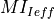 and return the value of error probability of the ECR of the same modulation with closest lower rate respect to the . In order to consider the effect of HARQ retransmissions a new sets of curves have been integrated respect to the standard one used for the original MCS. The new curves are intended for covering the cases when the most conservative MCS of a modulation is used which implies the generation of lower respect to the one of standard MCSs. On this matter the curves for 1, 2 and 3 retransmissions have been evaluated for 10 and 17. For MCS 0 we considered only the first retransmission since the
produced code rate is already very conservative (i.e., 0.04) and returns an error rate enough robust for the reception (i.e., the downturn of the BLER is centered around -18 dB).
It is to be noted that, the size of first TB transmission has been assumed as containing all the information bits to be coded; therefore
retransmissions. Therefore, in order to be able to return the error probability with the error model implemented in the simulator evaluates the and the 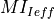 and return the value of error probability of the ECR of the same modulation with closest lower rate respect to the . In order to consider the effect of HARQ retransmissions a new sets of curves have been integrated respect to the standard one used for the original MCS. The new curves are intended for covering the cases when the most conservative MCS of a modulation is used which implies the generation of lower respect to the one of standard MCSs. On this matter the curves for 1, 2 and 3 retransmissions have been evaluated for 10 and 17. For MCS 0 we considered only the first retransmission since the
produced code rate is already very conservative (i.e., 0.04) and returns an error rate enough robust for the reception (i.e., the downturn of the BLER is centered around -18 dB).
It is to be noted that, the size of first TB transmission has been assumed as containing all the information bits to be coded; therefore 


 be the
subframe index, and
be the
subframe index, and  be the TB
size in bits as defined in [TS36213] for the case where a number
be the TB
size in bits as defined in [TS36213] for the case where a number  is the TTI duration.
At the start of each subframe
is the TTI duration.
At the start of each subframe  is the past throughput performance perceived by the
user .
According to the above scheduling algorithm, a user can be allocated to
different RBGs, which can be either adjacent or not, depending on the current
condition of the channel and the past throughput performance
is the past throughput performance perceived by the
user .
According to the above scheduling algorithm, a user can be allocated to
different RBGs, which can be either adjacent or not, depending on the current
condition of the channel and the past throughput performance 
 is the time constant (in number of subframes) of
the exponential moving average, and is the actual
throughput achieved by the user
is the time constant (in number of subframes) of
the exponential moving average, and is the actual
throughput achieved by the user  of RBGs allocated to user
:
of RBGs allocated to user
:

: packet arrival rate (byte/sec )
: token pool size (byte)
: counter that records the number of token borrowed from or given to the token bank by flow
: the maximum number of tokens UE i can borrow from the bank in one time.
: once
 is a grouping parameter that determines
granularity of the groups, i.e. the number of the flows that will be
considered in the FD scheduling iteration.
is a grouping parameter that determines
granularity of the groups, i.e. the number of the flows that will be
considered in the FD scheduling iteration. and .
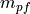 is the Proportional Fair metric which is defined as follows:
and .
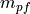 is the Proportional Fair metric which is defined as follows:


 , which has to be higher than a required minimum
in order to pass the criterion:
, which has to be higher than a required minimum
in order to pass the criterion:


is the updated filtered measurement result;
 ) defines the distance between the
entering and leaving conditions in dB. Similarly, time-to-trigger introduces
delay to both entering and leaving conditions, but as a unit of time.
) defines the distance between the
entering and leaving conditions in dB. Similarly, time-to-trigger introduces
delay to both entering and leaving conditions, but as a unit of time.


, then the UE transmit power 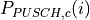 for PUSCH transmission in subframe
 and a component provided by higher
layers for
and a component provided by higher
layers for  is a 3-bit parameter provided by higher layers for serving cell
is a 3-bit parameter provided by higher layers for serving cell  ,
For 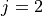, .
This parameter is configurable by attribute system:
,
For 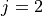, .
This parameter is configurable by attribute system: is a correction value, also referred to as a TPC command and is included
in PDCCH with DCI; 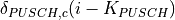 was signalled on PDCCH/EPDCCH with DCI for
serving cell
is a correction value, also referred to as a TPC command and is included
in PDCCH with DCI; 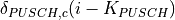 was signalled on PDCCH/EPDCCH with DCI for
serving cell  ; for FDD.
; for FDD. .
For P_Srs_Offset_Value is computed with equation:
.
For P_Srs_Offset_Value is computed with equation: is the bandwidth of the SRS transmission in subframe
is the bandwidth of the SRS transmission in subframe 


 is a set of neighbor cells, is the RNTP from the -th
neighbor cell. It takes a value of 1 when the
is a set of neighbor cells, is the RNTP from the -th
neighbor cell. It takes a value of 1 when the 
 100, maximum number of CC = 1
100, maximum number of CC = 1